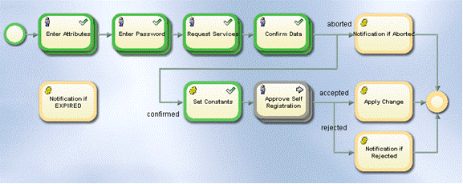
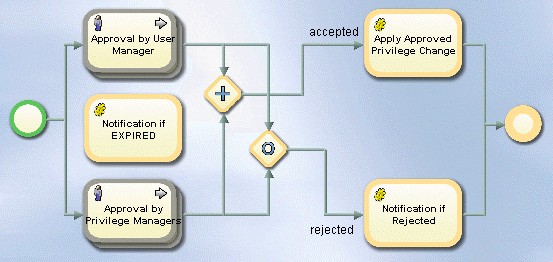
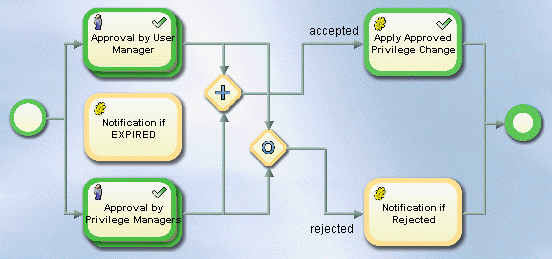
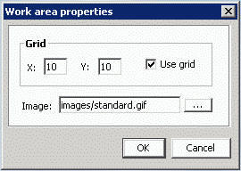
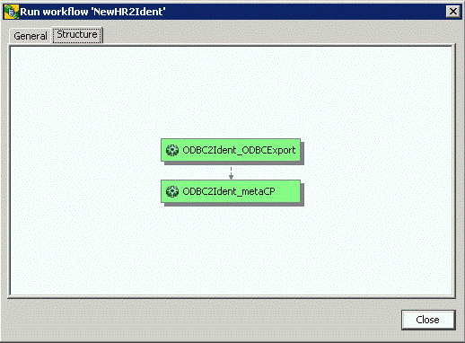

Getting-Started_502267994
[title-text] DirX Identity Knowledge Base : Getting Started #
Created by Gary Weissenbacher, last modified on Jul 02, 2024
[RH_PD_TOC_BK .confluence-anchor-link]#Getting Started
This quick start demonstrates the most important features of DirX Identity and illustrates the typical way to work with DirX Identity in a customer environment. It consists of several nearly independent sections that describe DirX Identity provisioning and connectivity administrative procedures.
The quick start scenario provided here is based on the My-Company sample domain, the My-Company connectivity scenario, and the default connectivity applications - referred to in this quick start as the "default connectivity scenario" - that are delivered with DirX Identity. We recommend that you read the "Users" and "Target Systems" sections in "About the Sample Domain" to become familiar with the My-Company sample domain’s structure and its objects before you proceed with the quick start.
This quick start consists of the following sections:
-
"Prerequisites" provides the prerequisites you must fulfill before you can start to work.
-
"Logging In" provides information how to log in to DirX identity Manager.
-
"Preparing to use the Quick Start" provides information how to set up initial sample data.
-
"Working with the Quick Start" provides information how to back up the database and check the database.
-
"User Self-Registration" explains how to use DirX Identity’s self-registration feature to add a single identity - a new user - to the My-Company sample domain and automatically provision the new user in the My-Company domain according to the requests for My-Company services made during user self-registration.
-
"Adding a New User" explains how to add a new user to the My-Company sample domain by hand and how to provision the new user in the My-Company domain, both by hand and automatically.
-
"Importing Identities" shows how to set up a workflow that imports multiple identities from an external source into the My-Company identity store and automatically provision them in the My-Company domain.
-
"Setting up a New Target System" shows how to add a new target system to the My-Company scenario.
-
"Using Password Management" shows how to set up a password management solution so that My-Company users can change their own passwords
After performing these quick start sections, you should be able to:
-
Understand and use most of DirX Identity’s powerful features
-
Set up customer-specific solutions quickly using DirX Identity concepts rather than creating your own concepts, which might require a lot of effort
Prerequisites
Before you can use the quick start, you must:
-
Install DirX Directory and its My-Company example database. Install DirX Identity Professional Suite (including the Business Suite) - ensure that Business and Pro Suite Upgrade and all of its selectable components - on the same machine (no distributed environment) - are checked when installing DirX Identity. The tutorial exercises aren’t compatible with the DirX Identity Business Suite.
-
Use the default selections in the Domain Configuration step of the initial configuration process (Configure the sample domain must be checked)
Note: if you did not make the default selections for Domain Configuration during the initial configuration process, run the Configuration Wizard (Start → All Programs → Atos DirX Identity V*n.n→ *Configuration) and make these selections in the Domain Configuration step.
Logging In
To log in to the DirX Identity Manager:
-
Select Start → All Programs/Apps → DirX Identity V*n.n → *Manager.
-
Click Provisioning.
-
In Server, click the down arrow and select My-Company from the list. Ensure that User DN is set to cn=DomainAdmin,cn=My-Company. If it is not, click the down arrow and select it from the list.
-
If My-Company does not appear in the Server list, click
 to open the Manage Server Profiles dialog. Click New to create a new server profile. Enter the following values into the fields in the Server dialog:
to open the Manage Server Profiles dialog. Click New to create a new server profile. Enter the following values into the fields in the Server dialog:
Name = "My-Company with Domain Admin"
Description = "Profile for My-Company to enter with Domain Admin account"
Host = "localhost"
Port = "389"
BaseDN = "cn=My-Company"
DefaultUserDN = "cn=DomainAdmin,cn=My-Company" -
Click OK to store the profile. Click Close to close the profile list window.
-
Select My-Company in Server. Be sure that User DN is set to cn=DomainAdmin,cn=My-Company. If not, select it from the list.
-
Enter the password dirx, and click OK.
After a few seconds, the DirX Identity Manager displays its views window.
Preparing to Use the Quick Start
Before we can follow our quick start, we must perform the following tasks:
-
Load the connectivity scenario for the My-Company sample domain
-
Create a sample connected system node
-
Add a certificate to the identity store for encryption
-
Add a certificate to the identity store for signed auditing (optional)
-
Enable auditing (optional)
-
Set up e-mail notification for the privilege approval process (optional)
-
Set up menu policies (optional)
-
Stop, then restart the DirX Identity and Apache Tomcat servers
-
Set up the portal target systems
Loading the Connectivity Scenario
Each DirX Identity domain (here the sample domain My-Company) requires a corresponding DirX Identity connectivity scenario. This scenario is not automatically installed.
To install the pre-defined connectivity scenario:
-
Log in to DirX Identity Manager.
-
Select the Connectivity view group and enter the password dirx in the Log in dialog.
-
Click the Expert View icon in the left pane to select it.
-
Right-click the top level node Connectivity Configuration Data, and select Import Data.
-
Choose the file install_path*\data\extension\My-Company_scenario.ldif*.
-
Click Open and wait until the scenario is loaded. (This action can take a few minutes.)
-
Click No in the View Trace File dialog.
-
Click Global View. A new scenario folder My-Company is displayed. Open it and click the Main scenario. Manager displays the target systems in the My-Company sample domain. If you have not done so already, we recommend that you read the "Target Systems" sections in "About the Sample Domain" to familiarize yourself with the target systems used in the My-Company sample domain.
Creating a Sample Connected System Node
We use an additional tree in an LDAP directory as the root node for several sample LDAP connected systems. We create a new context prefix o=sample-ts in the LDAP directory.
Creating a New Context Prefix
First, we’ll add the context prefix: o=sample-ts to the LDAP directory:
-
In the file install_path*basic.input.tcl*, enter the relevant passwords (default value dirx) in the DIR_PW and DEMODOMAIN_PW fields.
-
In install_path*\data\schema**dirx*, run the script Setup.bat
-
Check the file trace.txt to make sure that everything ran correctly. You should see three occurrences of the exit code 0.
Checking the New Context Prefix
Now we’ll use DirX Identity Manager’s data view to check that the tree sample-ts exists:
-
Log in to DirX Identity Manager’s data view (if not already logged in) and select Data View → Connectivity.
-
Right-click the data o=My-Company tree, then select Server…. (Ensure that you do not perform this and the following steps for the DirXmetahub tree!)
-
The "Server" properties window opens. Modify the server profile with these parameters:
Name: Sample-TS
Default User DN: cn=domainadmin,cn=My-Company
Base DN: o=sample-ts
Click OK. -
Now the node Sample-TS o=sample-ts is displayed instead data o=My-Company tree. That is the data o=My-Company tree has been re-configured to Sample-TS.
Adding a Certificate for Encryption
Some of the tutorial exercises use DirX Identity’s encryption function, so we need to add a certificate to the identity store to be used for password encryption:
-
Copy the dirxgenpse[.exe] tool from the folder DirXIdentity\EncryptionTool in the DirX Identity DVD’s installation structure to a directory to which the PATH variable points; for example, to the DirX Identity installation’s bin directory. Note: do not use the dirxgenpse[.exe] that is delivered and installed with DirX Directory.
-
Run the following command in the MS/DOS command prompt or in a UNIX shell:
dirxgenpse -D cn=server_admin,dxmc=DirXmetahub -s 2 -P 1234 -w dirx
Note: The -P option specifies the PIN of the certificate. In this example, we use the pre-configured value 1234 (this value is already configured in the server .*ini files). If you use another PIN (and you should do this in production environments!), you must change the .*ini files to use the new PIN.
Since it is the first generated key pair, the serial number 2 is set with the -s option.
To verify the successful generation of the certificate:
-
Start the DirX Identity Manager.
-
Log in to Connectivity and go to Data View → Connectivity (Connectivity dxmc=DirXmetahub) → cn=server_admin.
-
Open the All Attributes tab. You should see a userCertificate and a value for keyOwnerPSE containing …:*cn=server-admin,*… .
To enable encryption (optional), follow these steps:
-
In DirX Identity Manager, go to Connectivity. Select Expert View → Connectivity Configuration Data → Configuration → Server and then select ATTRIB_ADMIN_PW-Attributes and Administrative Passwords from Encryption. Save it.
-
Set encryptionMode to 1 in install_path*/server/conf/dxmmsssvr.ini*.
-
Reset all the existing passwords, which now need to be encrypted. For example, return to DirX Identity Manager (Connectivity). Select Global View→ Scenarios→ My-Company→ Main; select Identity Store. Select Configure… from the context-sensitive menu. Go to Bind Profile: Domain_Admin:. Set Password again to dirx and then save it.
Adding a Certificate for Signed Auditing (Optional)
Although none of the tutorial exercises demonstrate signed auditing, you might want to enable it to see how it works:
-
Run the following dirxgenpse command in the MS/DOS command prompt or in a UNIX shell:
dirxgenpse -D cn=DomainAdmin,cn=My-Company,dxmc=Users,dxmc=DirXmetahub -P 5678 -w dirx
Note: The -P option specifies the PIN of the certificate. In this example, we use the pre-configured value 5678. If you use another PIN (and you should do this in production environments!), you must set up the signaturePins values in the relevant password.properties files of the Java-based identity server (IdS-J).
To verify the successful generation of the certificate:
-
Start the DirX Identity Manager and log in to Connectivity.
-
Go to Data View → Connectivity (Connectivity dxmc=DirXmetahub) → dxmc=Users → cn=My-Company → cn=DomainAdmin.
-
Open the All Attributes tab. You should see a userCertificate and a value for keyOwnerPSE containing …:cn=DomainAdmin,…
Enabling Auditing (Optional)
You may also want to enable DirX Identity’s basic auditing feature - this type of audit does not require you to create any certificates. You enable auditing from DirX Identity Manager’s Provisioning view:
-
Log in to DirX Identity Manager.
-
In the Provisioning view, click Domain Configuration. In the Tree pane, My-Company is already selected and its properties are displayed.
-
Click My-Company’s Compliance tab.
-
Click Edit, and then check the Service Layer, the Request Workflows and the Authentications check boxes to enable auditing.
-
Click Save.
-
You may also enter an Audit Trail Folder. The default folder is '../AuditTrailDB'. You can set another folder by selecting Connectivity → Expert View → Connectivity Configuration Data → Configuration → DirX Identity Servers → Java Servers → My-Company → My-Company-S1-[your_hostname]. On the Status and Auditing tab, you can find Audit Trail Folder.
-
Enter 'C:\MetahubData\AuditTrailDB\' as the value. This action directs all audit trail information to the same sample audit trail folder.
-
Click Save.
This folder definition works for request and all Java-based workflows; that is, workflows that run in the Java-based server. Note that you can find the folder definition for the service layer in the connected directory of the Extract Audit Trail workflow. To view this setting:
Select Connectivity → Global View → Scenarios → My-Company → Main.
-
Right-click the Audit Trail Database icon and then select Configure from the context menu. The connected directory wizard opens.
-
Click the File Parameters step.
-
Click the AuditTrailDatabase row and open it (click the left icon in that line). A dialog opens.
-
The Filename attribute contains the path and prefix of the sample audit trail folder:
C:\MetahubData\AuditTrailDB\auditTrail_ -
We don’t want to change this value, so click Cancel and then Cancel again to close the wizard.
To work with auditing properly, some audit policies must be active. The My-Company sample domain contains a set of prepared and activated audit policies:
-
In the Provisioning view group, click the Auditing view. In the tree pane Audit Trail → Audit Policies → My-Company, choose Accounts.
-
In the General tab, check that the Active flag is set.
-
The next tab Identifying Attributes contains some attributes that are included into each audit record for better analysis capabilities in an auditing tool.
-
View the attributes to audit for this object type on the tab Audited Attributes.
You can view other audit policies to analyze their settings.
Setting up Email Notification (Optional)
In a production environment, DirX Identity normally sends email to all of the participants in an approval scenario. We are (almost) sure that the people in our sample domain do not exist in your environment as real people who have email accounts. Sending email to these people during the quick start will result in returned email at your mail server, which makes your administrators unhappy. To work around this problem, generation of email from request or Java-based workflows is turned off by default. You can leave the default as it is, or you can turn on email generation and direct it to be sent to your email address during the quick start exercises.
To configure DirX Identity to send approval email to your email address:
-
Log in to DirX Identity Manager.
-
In the Provisioning view, click Workflows.
-
Click Workflows → Configuration → Services → SMTP.
-
Click Edit.
-
In SMTP host, specify your mail server’s SMTP server name.
-
In Map mail address, specify your email address to direct approval mail to be sent to your account.
-
Click Save to store your changes.
Setting up Menu Policies (Optional)
By default, all users can see all Web Center menus and submenus once they have logged in. You can define menu policies for controlling the visibility of Web Center menus and submenus. To enable these menu policies:
-
Click Provisioning → Domain Configuration.
-
Click the Policies tab.
-
Click Edit and then check the Enable menu policies checkbox.
-
Click Save.
Restarting the Servers
After closing DirX Identity Manager we now use the Windows Services tool to stop and then re-start the following servers:
Use the Stop selection to stop the servers in the following order:
-
Apache Tomcat server (name: Apache Tomcat n)
-
Java-based Identity Server (name: DirX Identity IdS-J-domain-Sn Vn.n)
-
C++-based Identity Server (name: DirX Identity IdS-C Vn.n).
-
Message Broker (name: DirX Identity Message Broker n)
Use the Start selection to start the servers in the following order:
-
Message Broker (name: DirX Identity Message Broker n)
-
C++-based Identity Server (name: DirX Identity IdS-C Vn.n).
-
Java-based Identity Server (name: DirX Identity IdS-J-domain-Sn Vn.n)
-
Apache Tomcat server (name: Apache Tomcat n)
Note: do not use the Restart selection to restart the servers; sometimes it does not work correctly.
Setting up the Portal Target Systems
We assume that the Intranet and Extranet Portal target systems also reside in the sample-ts area. We’ll use them later in the password management exercises. The corresponding workflows are set up accordingly. To synchronize the target system content to the connected system, we’ll run their synchronization workflows:
-
Log in to DirX Identity Manager Provisioning view group: Select the Provisioning view group and then enter the password dirx in the log in dialog.
-
Click the Target Systems icon in the left pane to select it.
-
Right-click the Extranet Portal target system. DirX Identity Manager starts reading some configuration data and then displays the context-sensitive menu.
-
Select Connectivity → Workflows → Ident_Extranet_Realtime → Run Workflow to run the workflow to synchronize the Extranet target system.
-
A confirmation window displays the message Java-based Workflow successfully initiated.
-
Click OK.
-
Right-click the Intranet Portal target system. DirX Identity Manager displays the context sensitive menu.
-
Select Connectivity → Workflows → Ident_Intranet_Realtime → Run Workflow to run the workflow to synchronize the Intranet target system.
-
A confirmation window displays the message Java-based Workflow successfully initiated.
-
Click OK.
-
In Data View → Connectivity (password dirx) → Sample-TS o=sample-ts (password dirx), check that the two nodes (ou=Extranet and ou=Intranet) are filled with accounts and groups. (Click the refresh button if they are not visible).
Working with the Quick Start
When you follow the exercises in the quick start, you should:
-
Back up the example database between exercises
-
Check the example database statistics between exercises, such as the number of entries created and the operations performed
Backing up the Database
Once you have completed your preparation for the quick start, you should back up the example database so that you can restore the prepared example database should you run into problems later on. It is also a good idea to back up your example database each time you successfully complete a quick start exercise. This way, you can retry an exercise that failed for some reason without having to return to the very first exercise.
Refer to your directory service product’s user documentation for instructions on how to back up your data. For example, if you are using DirX Identity with the DirX directory service, you can use dirxbackup to save and restore the database; this command is described in the DirX Administration Reference.
Checking the Database
It’s also a good idea to examine the example database after you’ve performed a quick start exercise to see its effect on the database contents and operation. Refer to your directory service’s user documentation for instructions on how to view directory database statistics and monitor the database. For example, if you’re using the DirX directory service, you can use the dirxadm tool’s nmi show operation after you’ve performed an exercise to display statistics about the operations performed on the database during that exercise. The DirX Administration Reference provides usage details about dirxadm nmi show.
User Self-Registration
In this section, we show how an employee of one of My-Company’s customers self-registers as a My-Company user and requests some of the services that My-Company offers to its customers. This section demonstrates how to:
-
Start the self-registration process
-
Enter the user data required for creating the new customer identity
-
Enter the user’s password
-
Select some of the services that My-Company provides to its customers
-
Review and submit the supplied user data
-
Monitor the self-registration process
-
Approve the user creation request and the services that the customer employee has selected
-
Log in as the new user and view his data
Note that self-registration is disabled by default for security reasons. See the DirX Identity Web Center Customization Guide for how to enable it.
Requesting the Services
My-Company’s customers include three re-seller companies: Mercato Aurum in Italy, and TakeAway and MultiMarket in the U.S.A. My-Company makes the following services available to employees of these companies:
-
The My-Company monthly newsletter, which announces new products, highlights company achievements, and provides general company information of use to its employees and its customers
-
Services that allow customers to participate in My-Company’s hardware and software beta programs
Now we’ll demonstrate how someone in one of My-Company’s customer organizations can self-register for access to My-Company’s customer services. Nico Farfello is a new Mercato Aurum employee who is responsible for testing the company’s products with upcoming My-Company hardware releases. In order to perform his testing tasks, Nico needs access to My-Company’s hardware beta programs services.
Starting the Self-Registration Process
We’ll use DirX Identity Web Center’s self-registration facility to register with My-Company as Nico Farfello and request the necessary services. To start the self-registration process:
-
Enter the URL http://localhost:8080/webCenter-My-Company in an Internet browser to start the DirX Identity Web Center. (The Web Center may take a little time to start up the first time you use it because it runs some preparation tasks. This is also true for each Web page you visit for the first time. Subsequent visits to the same page are much faster.)
-
Click Register. (Note that we describe the Web Center handling in English. You can use the Language menu in the upper right-hand corner to switch to German.) This action automatically starts the DirX Identity workflow that handles user self-registration requests for My-Company’s customers. We will show how to monitor this workflow’s progress later on in this sequence.
Providing User Data
A few seconds after we click Register, Web Center displays a dialog for entering mandatory and optional data about the person whose identity is to be created in the DirX Identity store. Fields that are mandatory are highlighted in red. We use this dialog to enter required and optional information about Nico Farfello:
-
First, we must adjust the Folder path to point to the Mercato Aurum part of My-Company’s Users directory tree. This is the location in My-Company’s identity store (user tree) at which Nico’s identity (user entry) is to be created. Click to the right of Folder. Navigate to the Customers node, and then select Mercato Aurum.
-
In the fields displayed in the dialog:
-
Leave Title empty.
-
Enter Farfello in Last Name. Click the TAB key to move to the next field.
-
Enter Nico in First Name. Click the TAB key.
-
Select Mercato Aurum Rome in Location. Click the TAB key.
-
Enter +39 6 2345 8793 in Phone. Click the TAB key.
-
Enter nico.farfello@mercato-aurum.it in Email.
-
-
Click Save. Web Center then displays the password selection dialog.
Entering a Password
The password selection dialog allows you to specify a password for the identity (user account) to be created for you in the DirX Identity store. You must be sure to specify a password that follows the guidelines for password creation described in the dialog, and make sure you make a note of this password so that you can use it later on. In our case, we need to create a password with one alphanumeric character, one special character, one numeric character, and one uppercase character. The entire password must be no less than 6 characters and no more than 8 characters.
-
Enter 1!dirX in Password.
-
Enter 1!dirX again in Repeat password.
-
Click Save. Web Center then displays the services selection dialog.
Selecting the Services
The services selection dialog allows you to request the services you want. In DirX Identity, these services are modeled by roles, which we’ll discuss in more detail later on in this tutorial. In Nico’s case, he wants the Hardware Beta Programs role for access to My-Company’s beta program services:
-
Click Search to the right of Search for. Web Center shows the services available to My-Company’s customers. You can see that Customer Newsletter, Hardware Beta Programs, and Software Beta Programs are now displayed in Available roles.
-
Clicking a line toggles the checkbox to the left of a line. Click the Hardware Beta Programs and Customer Newsletter. Note that Hardware Beta Programs requires approval. This means that someone in My-Company must approve the request for this service. We will talk about this process later on in this sequence.
-
Click the down arrow at the bottom of the dialog to select the services.
-
Click Save to save your selections. Web Center next displays a data confirmation dialog.
Confirming the User Data
The data confirmation dialog gives you the opportunity to review and change the identity (user data) information you’ve provided to the registration process.
-
Click Accept to approve the information you have provided and proceed with the registration process.
-
After a few seconds, Web Center displays its Log in page and a message indicating that the registration request has been accepted.
-
Since we have no more to do in this step, click OK to close this window and terminate the Web Center browser.
Monitoring the Self-Registration Request
We can use DirX Identity Manager’s Monitor view to see the progress of Nico Farfello’s registration request:
-
Log in to DirX Identity Manager’s Provisioning view.
-
Click Workflows, and then click Workflows → Monitor → My-Company → Users → Customer Self Registration. In a production environment, this folder contains sub-folders named with dates; for example, 2016-07-17. Each sub-folder contains status information about the request workflows that have executed on these dates.
-
In our case, we have one folder with today’s date. Click this folder, and then look for Nico Farfello in the list of workflows (it should be the only one there). Click it. In the General tab, Manager displays a graphical representation of the user self-registration request workflow that is processing Nico’s registration request, as shown in the following figure.

You can see that the steps we have just completed are all highlighted in green, which means that these activities have completed successfully. The next step – approving the self-registration request - is highlighted in grey to indicate that it is the activity that is currently being processed.
Approving the Self-Registration Request
Nico’s request for registration as an identity in My-Company’s identity store (user in My-Company’s directory tree) requires approval from a member of My-Company’s customer registration hotline. Three of My-Company’s Sales employees are members of this group:
-
Briner Ruben, who is the assistant to My-Company’s General Sales Manager, Hatty Straub
-
Klarmann Bruno, who is the manager of the Sales Europe organization
-
Ratnam Dilip, who is the manager of the Sales US organization
The request workflow’s approval activity will automatically notify each of these people by email about Nico’s registration request. Only one of these people needs to approve the request in order for it to be successfully processed. In the next sections we’ll show how one of these people - Bruno Klarmann - uses the Web Center to view and approve Nico’s request. We can do this with or without email notification; it depends on how you set up email notification when you prepared to use the quick start.
Approving without Email Notification
If you left the SMTP configuration in the default state when you prepared to use the quick start (no email notifications are performed):
-
Start the Web Center by entering the URL http://localhost:8080/webCenter-My-Company in your Internet browser.
-
Enter Klarmann Bruno in Name and the password dirx. (Remember that all persons in the sample domain are set up to have the same password.)
-
Click Log in (or press RETURN) to log in.
-
Follow the steps described in "Approving the User Creation Request".
Approving with Email Notification
If you entered your email address into the Map mail address field of the SMTP service in "Setting up Email Notification", you can use the email notifications you received from the user self-registration workflow to approve the privilege assignment.
-
Open your mail client. You should have three email messages that inform you about user creation approval requests: one for Briner Ruben, one for Klarmann Bruno, and one for Ratnam Dilip.
View one of these emails and then click the link that starts the browser and displays the log in page of the Web Center. -
Enter the full name of the approver you selected in Name.
-
Enter the password dirx and click Log in.
-
Follow the steps described in "Approving the User Creation Request".
Approving the User Creation Request
Now we’re logged into the Web Center as one of the approvers of Nico’s request and can approve her request either from our task list dialog or by clicking directly on the Approve Self-Registration Task for Nico Farfello in the home page on the right side below My Tasks.
In the first case, you must follow the next two bullet points. In the second case, you can follow on directly with the third bullet point.
-
Select Work List → Task list. Web Center displays Nico Farfello’s data in the "Approve Self-Registration" dialog.
-
Click on the task for Nico Farfello.
-
Enter N. Farfello is an employee of Mercato Aurum in Reason. (It’s good practice to provide a reason for your decision, especially if you reject a request.)
-
Click Accept to grant the request.
Note that Task list is now empty.
Checking the Result of User Creation Approval
While we’re logged in as Bruno Klarmann (or one of the other approvers), we can use the Web Center’s User Management view to see if an entry for Nico has been successfully created in the identity store.
Simply enter F in the User Quick Search bar and press RETURN. Follow on with the fourth bullet point below.
As an alternative, you can select the user by using the menubar options:
-
Select Users → Select user.
-
Since Nico is an employee of Mercato Aurum, his user entry should be located in the Mercato Aurum part of the My-Company directory tree. Click to the right of Search base, then select Mercato Aurum under Customers from the tree view.
-
Enter F in Search for and then click Search.
-
An entry appears for Nico. Click it. If Nico is not yet visible, wait a short time until and try again. The reason is that the workflow task is not yet completed.
-
Click Roles. You can see four entries:
-
Two for the services that Nico has requested (indicated by Manual in the last column Mode): one for the customer newsletter, and one for the hardware beta program service.
-
Additionally, two roles were assigned by rules: a silver customer and a platinum customer role. The first comes from the rule that all users of type Customer get the silver customer status, the second was assigned due to the fact that all users of Mercato Aurum are treated as platinum customers (excellence bonus program).
-
-
Click on the Download all tabs button () from the button group placed left to the Roles button to see all tabs.
-
Look at the State column for the four roles. The state for Customer Newsletter, Silver Customer and Platinum Customer is ENABLED, which means that Nico has successfully obtained this service. The state for Hardware Beta Programs is ADD, which means there is more to do before Nico can gain access to this service.
-
Select Users → Show subscription status. Per default, you can see a running workflow for the hardware beta programs.
-
Click on the Download all tabs button (
 ) left to the Running Workflows button to see all tabs.
) left to the Running Workflows button to see all tabs. -
You can still see the running hardware beta programs workflow but additionally the already completed self-registration workflow that has the state Succeeded.
-
Click the running workflow entry Farfello Nico –> Hardware Beta Programs. In Running Workflows, you can see that the current activity is Approval by Sales Manager, with Briner Ruben listed as a Participant. This means that Mr. Briner must approve Nico’s request for the Hardware Beta Programs service. We’ll talk more about this in the next section.
-
There is nothing more to do, so click Logout.
Approving the Hardware Beta Programs Request
Recall that "requires approval" was shown for the hardware beta programs service when Nico requested it ("requires approval" was checked in the information about the role). While satisfying a customer’s request for My-Company’s newsletter simply adds the person to an email list, satisfying a request for participation in My-Company’s hardware or software beta program is more complex. An approval step serves as notification to the person responsible for the program that a new customer wants to be included in it, and triggers the approver to perform all the tasks related to getting the customer into the program.
My-Company’s Sales manager Ruben Briner is the person responsible for My-Company’s hardware beta programs, and so he must approve all requests for this service from My-Company’s customers. Consequently, the approval step for the hardware beta programs service notifies Ruben that he needs to talk with Nico about program schedules, include her in appropriate status meetings, send her detailed information about the hardware beta program, and set up consulting and support contact information for him.
Monitoring the Hardware Beta Programs Approval Workflow
DirX Identity is now running a new, completely separate request workflow to handle the approval of Nico’s request for the hardware beta programs service. We can use DirX Identity Manager’s Provisioning → Workflows Monitor View to check the progress of this new and separate approval workflow:
-
In Provisioning → Workflows, go to Monitor → My-Company → Approval → Approve Customer Self Services and look for a folder with today’s date.
If My-Company is not displayed it is necessary to refresh your data: Click Monitor and the refresh button .
. -
Select the Farfello Nico → Hardware Beta Programs workflow - this workflow is handling the approval of the hardware beta programs service.
-
In the General tab, you’ll see the workflow’s graphical representation. The activity "Approval by Sales Manager" is highlighted in grey, which means it is currently being processed.
Approving the Hardware Beta Programs Request
Now we’ll complete the approval process by logging into the Web Center as Briner Ruben, who must approve the Hardware Beta Programs service request.
-
Switch to the Web Center again. Enter Briner Ruben in Name and dirx in Password (Note that all users in the sample domain have the same password.) Click Log in (or press RETURN) to log in.
-
Click on the Approval by Sales Manager Task for Nico Farfello in the My Tasks section of the home page or select this task when performing the Work List → Task list operation. Web Center displays an approval dialog.
-
Enter All open issues clarified. All necessary tasks done. in Reason. (It’s good protocol to provide a reason for your decision, especially if you reject a request.)
-
Click Accept to grant the request.
-
Note that Task list is now empty.
-
Since we have no more to do in this step, click Logout to exit from Briner’s user account.
Using the New Account and Password
Now we’ll log in to the Web Center as Nico Farfello and examine his user information and privileges. We can do this with or without email notification; it depends on how you set up email notification when you prepared to use the quick start.
Logging In without Email Notification
If you left the SMTP configuration in the default state when you prepared to use the quick start, email notifications are not performed. To log in as Nico:
-
Switch to the Web Center again (or start it by entering the URL http://localhost:8080/WebCenter-My-Company in your Internet browser.)
-
Enter Farfello Nico in Name and the password 1!dirX.
-
Click Log in (or press RETURN) to log in.
-
Follow the steps described in "Viewing the New User".
Logging In with Email Notification
If you entered your email address into the Map mail address field of the SMTP service in "Setting up Email Notification", you can use the email notification you received from the user self-registration request workflow to log in:
-
Open your mail client. You should have an email message for Nico Farfello that informs you that your registration request was successful. View this email and then click the link that starts the browser and displays the Log in page.
-
Enter Farfello Nico as Name.
-
Enter the password 1!dirX and then click Log in.
-
Follow the steps described in "Viewing the New User".
Viewing the New User
Now we are logged into Web Center as Nico and can view her home page, showing some personal data, her roles and her tasks.
-
Click on Self Service → Display summary to view her user summary.
-
Web Center displays a summary of Nico’s user information. You can see the user data that we entered for Nico during the self-registration process.
-
Click Roles to see the roles that have been assigned to Nico. You see that she has Customer Newsletter and Hardware Beta Programs roles in ENABLED state, which correspond to the services she requested. She also has two more roles that were assigned automatically by rules. This information was also shown in the home page after log in, where you can click on more… in that section to display this page.
-
Click Permissions to see the permissions that have been assigned to Nico. Customer Newsletter, Hardware Beta Programs, Platin Customers and Silver Customers permissions are listed. The state is INHERITED because in the My-Company domain, all permissions except for signature level permissions are inherited from the assigned roles.
-
Click Groups to see the groups that have been assigned to Nico. You see Customer Newsletter, Hardware Beta Programs, Platin Customers and Silver Customers groups. You can read more about My-Company’s role, permission and group relationships - called its privilege structure - in the chapter "About the My-Company Sample Domain".
-
Note the Target Systems column - it identifies the systems to which these groups belong; in this case, it is the Extranet Portal target system, which is My-Company’s extranet application for its customers and suppliers. You can read more about My-Company’s target systems in the chapter "About the My-Company Sample Domain".
-
Click Accounts to see the accounts that DirX Identity has automatically created for Nico. You see one account for Nico in the Extranet Portal target system that was automatically created by DirX Identity.
-
There is no more to do in this step, so click Logout.
So far, we’ve shown how to use DirX Identity’s user self-registration feature to add a new user to the Identity Store and automatically assign him privileges - roles, permissions, and groups - that correspond to the services he requested during registration. In the next section, we’ll discuss how to add a new user to My-Company’s user tree and assign him privileges both by hand and automatically with provisioning rules.
Adding a New User
In this section, we hire a new contractor named Mark Teacher as an additional trainer for the Professional Services department. He will work for the Asian market. This section demonstrates how to:
-
View the users of the Professional Services department
-
Add the new user to this department
-
Assign privileges to the new user by hand
-
Add a user password
-
Approve the user’s privileges
-
Add the new user to a project
-
Assign privileges to the user automatically
Viewing Users
Before we add Mr. Teacher, let’s take a quick tour of the My-Company user view to become familiar with the sample domain in this area. You will see that some of the user data in the sample domain is not in an optimal state. This is the data that we’ll correct step by step in the next sections of this quick start. For now, we’ll log into DirX Identity Manager and use the Provisioning → Users view to look at some of My-Company’s personnel data.
-
Click Provisioning → Users. The tree contains folders for Customers, Suppliers, the employees of My-Company and System (empty). It also contains the standard query folders for the user view: Errors, Inconsistent, Relative Time Constraint, To Be Deleted, ToDos and Variable Time Constraint. You can use these query folders to search for and identify users that need some administrative action to be taken, such as users that need to be assigned privileges, or to find users that have similar properties, for example, users located in Munich. We’ll demonstrate how to use query folders later on in this quick start.
-
Open My-Company to view the different departments.
-
Open Professional Services. You can see the seven employees of this department. Let’s take a closer look at some of these employees.
Checking Auffret Jean-Marc
In DirX Identity Manager → Provisioning → Users → My-Company → Professional Services:
-
Click Auffret Jean-Marc to view the details about this person in the General tab.
-
On the Location tab, you can see that he is located in Barcelona, Spain.
-
On the Organization tab, you can see that he works for Professional Services.
-
On the General tab, you can see in the Description field that he handles the Southern Europe area. His employee number is 7836 and he is an Internal employee.
-
On the Operational tab, you can see that he is in the ENABLED state, which means he is an active user.
-
On the Relationships tab you can see that his manager is Lionel Bellanger. Click
 to the right of this entry to display this person’s information.
to the right of this entry to display this person’s information.
Checking Bellanger Lionel
Lionel Bellanger is the manager of Professional Services and handles the Central Europe area. He’s located in Paris, France. His manager is the general manager of My-Company, Olivier Hungs.
-
Click the Location tab to check for Country and Location.
-
Clich the General tab to check for Employee Type.
-
Click the Relationships tab for Manager.
-
Click the Organization tab for Organizational Unit.
These fields represent the user attributes that are used for automatic privilege assignment and provisioning. We’ll talk about this concept later on in the tutorial. Now let’s check another user: Blander Dyan.
Checking Blander Dyan
In DirX Identity Manager → Provisioning → Users → My-Company → Professional Services:
-
Click Blander Dyan to see that he works in Chicago and is responsible for Northern USA / Canada.
-
Click the Communication and the Location tabs to view his communications-related user attributes like e-mail and phone.
Now let’s take a look at this user’s privileges.
Checking Blander’s Privileges
In DirX Identity Manager → Provisioning → Users → My-Company → Professional Services → Blander Dyan:
-
Click the Assigned Roles tab to view the roles that are assigned to this user. In the Assigned by column, you can see that the first role has been assigned automatically by a provisioning rule (rule), that the second role is inherited from a business object (BO) and that the third role has been assigned by hand (manual). Because Dyan is an internal employee he has received the role Internal Employee by rule. We will analyze the content of this role later on in this quick start. The My-Company administrators have determined that the tools required for members of the Sales and Professional Services departments are the same. Consequently, the role Sales Tasks has been automatically assigned via inheritance from the organizational unit business object to all members of Professional Services. This assignment is not correct and you will see in a later exercise how to change it. Additionally, Dyan works as a trainer, and thus has the role Trainer assigned to him by hand.
-
Click the Assigned Permissions tab to view the permissions assigned to Dyan Blander. Signature Level 1 is assigned to all internal employees. In My-Company, only three signature levels exist. All other permissions are inherited from the assigned roles.
-
Click the Assigned Groups tab to view the groups assigned to this user. The Target Systems column shows the target systems to which these groups belong. Click the column header to sort the target system column. You can see that most groups belong to the Windows Domain USA target system but that the user also has access to the Intranet, Extranet and SAP R3 target systems. The Signatures target system is a virtual target system - there is no physical connected system behind it, because signatures in My-Company are pure paper processes. Due to this fact, synchronization to this connected system is not necessary, which results for this group assignment in an immediate ENABLED state. The Intranet and Extranet target systems are 'real' target systems (modeled as LDAP trees in this sample scenario). All other groups are in state ADD which means that the target system synchronization has not yet been performed. The reason is that these connected systems do not exist in this sample scenario.
Now let’s take a look at this user’s accounts.
Checking Blander’s Accounts
In DirX Identity Manager → Provisioning → Users → My-Company → Professional Services → Blander Dyan:
-
Click the Accounts tab to view the corresponding accounts in the target systems that DirX Identity has created automatically for this user. Note that the Signature target system does not have an account.
Note also that the State of all four accounts is ENABLED whereas the State in TS in only ENABLED for the accounts of the Intranet and Extranet target systems. This means that these accounts have already been provisioned to the connected systems. The other two accounts are still in State in TS NONE.
The "Users" section in "Understanding the Sample Domain" provides more information My-Company’s users and its department structure, while the "Privileges" section provides more information about My-Company’s privilege structure (its roles, permissions, and groups). For now, let’s move on to the next topic, "Adding the User".
Adding the User
We’ll use the DirX Identity Web Center to create the new identity for Mark Teacher. First, we’ll run it from an Internet browser and log in as Taspatch Nik, since he is the user administrator for the Professional Services Department. Then we’ll use the Web Center’s User Management view to add Mark Teacher’s information to the identity store. Note that you can also import identities from other sources; "Importing Identities" explains how to do this.
-
In an Internet browser, enter the URL http://localhost:8080/webCenter-My-Company to start the Web Center.
-
Enter Taspatch Nik in Name and the password dirx. (Remember that all users in the sample domain are set up to have the same password.)
-
Click Log in (or press RETURN).
-
Select Users → Create new user.
-
A workflow selection dialog appears. In a production environment, the DirX Identity customer defines the workflows he requires and assigns them to specific groups of people. In our case, the workflows listed here are My-Company sample domain workflows that Nik is permitted to run. Select create a user stepwise without approval because Nik, as a user administrator, is permitted to create users without the need for any additional approvals.
A dialog appears to enter the new user’s properties. Mandatory fields are shown in red. Use the TAB key to move to the next input field.
-
Click
 to the right of Folder to select the location in the sample domain’s user tree at which to create the user. A dialog opens and shows the available organization tree. Open My-Company, and then select Professional Services.
to the right of Folder to select the location in the sample domain’s user tree at which to create the user. A dialog opens and shows the available organization tree. Open My-Company, and then select Professional Services. -
Enter Teacher in Last name. Click TAB to move to the next field.
-
Enter Mark in First name. Click TAB to move to the next field.
-
Enter Trainer for Asia in Description. Click several TABs to move to the Employee type field.
-
Select Contractor in Employee type. Click TAB to move to the next field.
-
Enter 83730 in Employee number. The employee number must be a unique value in your system. Note that In a productive environment you could create this number automatically.
Click TAB to move to the next field. -
Select My-Company San Jose in Location. Depending on this value, the correct country is specified automatically.
-
Click the icon to the right of Manager. The Select a Manager dialog appears. Enter B in Search for, and then click Search to get a list of names that begin with "B". Select Bellanger Lionel from the list.
-
Select My-Company in Company.
-
Select Professional Services in Organizational Unit. Click into the next field.
-
Enter +1 408 876 in Phone. Click several TABs to move to the E-Mail field.
-
Enter Mark.Teacher@My-Company.com in E-Mail.
-
Click Save. Web Center then displays a privilege assignment dialog.
Assigning Privileges by Hand
Privileges (roles, permissions, and groups) can be assigned to a user either by hand or automatically via a provisioning rule or via inheritance from a business object (for example an organizational unit). Here we show how to assign them by hand as part of the Web Center’s user creation process.
Because Mark shall work as a trainer, he needs the Trainer role. Privileges can only be assigned by people who are permitted to do so; access policies specify the privileges a person can assign and the people to whom he can assign them. The My-Company sample domain defines an access policy for user administrators that permits them to assign roles to users. Because he is a user administrator, Nik Taspatch has the necessary access rights (which comes from the user administrator access policy) to assign the Trainer role to Mark Teacher.
-
Enter T in Search for, and then click Search to get a list of roles that begins with "T".
-
Mark the Trainer role for selection (set the flag or simply click on the line), and then click the down-arrow button to move it to Assigned roles. Note that the state of this new role assignment is ToBeApproved, which means that a new approval workflow is to be started to notify the appropriate approvers.
-
Click Save.
Next Nik Taspatch will assign a password to this user.
Adding a User Password
The last administrative task that Nik Taspatch needs to perform is to specify a default password for Mark Teacher’s new user account. We’ll use the Web Center’s Reset Password dialog to carry out this task:
-
Select Teacher Mark in Users → Select user dialog or search for T in the Users quick search bar and select Teacher Mark.
-
Select Users → Reset password.
-
Enter a password of your choice. Be sure to follow the password policies shown in the dialog - for example, 1!dirX is a password that complies - and remember this password for later use
-
Click Save. DirX Identity starts a password management workflow that assigns the password you specified to the new user Mark Teacher.
-
There is no more for Nik Taspatch to do, so click Logout.
Approving the User’s Privileges
In this section, we’ll show how to use the Web Center to approve the privileges that Nik Taspatch has requested for Mark Teacher, and how to monitor the progress of these approvals from three different tools: the Web Center, DirX Identity Manager, and DirX Identity Web Admin.
Checking the Approval Workflow
Recall that DirX Identity automatically creates an approval workflow to handle the approval of Mark’s Trainer role. You can view this approval workflow in several ways: with Web Center, with DirX Identity Manager, and with DirX Identity Web Admin. Let’s do it here with DirX Identity Manager:
-
In Provisioning → Workflows click Monitor → My-Company → Approval → 4-Eye Approval. You will see a folder with today’s date. This folder contains the created workflow. Open it.
-
Click Teacher Mark → Trainer. The General tab displays the workflow’s structure.

-
In the structure view, you see two parallel steps: Approval by User Manager and Approval by Privilege Manager. In the My-Company sample domain, both a user’s manager and the manager of the privilege must approve a role assignment. Right-click Approval by User Manager, and then select Open.
-
Click the Status Information tab. In Participants, you see the name Bellanger Lionel. Mr. Bellanger is Mark Teacher’s manager, and so he must approve the role assignment.
-
Click Close. Manager returns you to the workflow structure view.
-
Right-click Approval by Privilege Managers to open it, and then click the Status Information tab. In Participants, you can see that Costello Marcella, who owns the Trainer role, must approve its assignment to Mark. Click Close to return to the structure view.
-
The plus sign icon indicates that both people must make a decision to approve the privilege assignment; if one person denies it, the privilege will not be assigned.
Approving the Request
Now we are ready to approve the assignment. First, we’ll log in to Web Center as Lionel Bellanger (remember that you can use email to log in if you enabled email notification when preparing to use the quick start):
-
Start the Web Center by entering the URL http://localhost:8080/webCenter-My-Company in your Internet browser (or switch back to it if you left it running).
-
Enter Bellanger Lionel in Name and the password dirx.
-
Click Log in.
-
Select Work List → Task list and click the task in the list. The approve assignment dialog appears (Approval by User Manager). You can also click directly on Approval by User Manager for Teacher Mark in the My Tasks section of the home page.
-
Click the task in the list. The approve assignment dialog appears (Approval by User Manager).
-
Enter Trainer for Asia in Reason (remember that it’s good practice to give a reason for your decision, especially when you reject a request)
-
Click Accept. The work list is now empty.
Checking Approval with Web Center
We can check the result of Mr. Bellanger’s approval in several ways. First, let’s check it with the Web Center while we’re logged in as Mr. Bellanger:
-
Select Users → Select user, enter T in Search for, and then click Search to return a list of users whose last names begin with "T". You can also enter T in the user quick search bar and press RETURN.
-
Select Teacher Mark from the list. Web Center displays a user summary for Mark.
-
Click Roles. You can see three roles:
-
Contractor - this role was assigned by rule.
-
Sales Tasks - this role is inherited from the organizational unit business object.
-
Trainer - this role is in state ADD which means it is still in approval.
-
-
Select Users → Show subscription status to see details about the approval workflow that is running for the Trainer assignment. You can see that the workflow’s state is Running.
-
Click the line to view more details of this workflow.
-
In the section Running activities you can see the pending approval activity for Marcella Costello.
-
The section Finished activities shows the completed approval from Lionel Bellanger.
-
There is nothing more to do, so click Logout.
Checking Approval with DirX Identity Manager
Next, let’s check it with the DirX Identity Manager.
-
Go to the folder with today’s date in Provisioning → Workflows → Monitor → My-Company → Approval → 4-Eye Approval and click Teacher Mark – Trainer workflow again.
-
Click the refresh button if necessary. You can see that the approval activity for Mr. Bellanger is now green, indicating success.
Checking Approval with Web Admin
We can also use DirX Identity Web Admin to check the status of the approval process. Workflow Service Administration is a simple interface intended for use by administrators (not end users!) to view and control the DirX Identity Java-based servers. To use Web Admin:
-
Start a new Internet browser instance and enter http://localhost:40000/admin. The Web server prompts for an administrative account and a password. Enter admin in User Name and wE3!dirx in Password.
-
Open Java Server → Workflow definitions → Request workflows → My-Company → Approval. Here you see, for example, the definitions for approval workflows that are loaded and active in the Java-based Server.
-
Click Workflow instances → Request workflows. click on Search. You can see the Teacher Mark → Trainer workflow in the state RUNNING as well as the creation workflow for Mark Teacher, which has already completed (it is in the state SUCCEEDED). Click on the workflow to open the details.
-
That’s all we’ll use the Web Admin for now, so you can close the browser window to exit the program.
Continuing the Approval Process
Now we’ll complete the approval process by approving the request from the Web Center as Marcella Costello:
-
Switch to the Web Center again. Enter Costello Marcella in Name and the password dirx and then click on Approval by Privilege Managers for Teacher Mark in her My Task section or use Work List → Task list and click the entry in the list. The approve assignment dialog appears.
-
Enter New Trainer for Asia in Reason.
-
Click Accept.
-
There is nothing more to do, so click Logout.
Checking the Results of the Approval Process
Now we’ll check the results of the approval process: we’ll check the workflow’s structure and the user Teacher’s privileges.
Re-Checking the Workflow’s Structure
First, we’ll re-check the request workflow’s structure (we assume that you have kept a DirX Identity Manager session open during this exercise):
-
Switch to the DirX Identity Manager and select Provisioning → Workflows → Monitor → My-Company → Approval → 4-Eye Approval → today’s date → Teacher Mark - Trainer. You can view the workflow structure again.
-
Click the refresh button
 to view the updated figure.
to view the updated figure.
-
You can see that all of the workflow’s approval steps are now highlighted in green, and so is the Apply Approved Privilege Change activity, which has assigned the Trainer role to Mark Teacher. This means that the approval workflow has completed successfully.
-
Click the Status Information tab. You can use Status expiration to see the expiration date at which an administrative task can delete the status entry for the role assignment of Trainer to Mark Teacher. In our case, the administrative task can automatically remove the entry after 1 day (24 hours). After this time, you will find information about this role assignment and the corresponding approval only in the generated audit trail (if audit is activated).
Re-Checking User Teacher’s Privileges
Now let’s use the Web Center to check Mark Teacher’s privileges after the approval process has run. To do this, we’ll log in as Mark:
-
Switch to the Web Center again. Enter Teacher Mark in Name and Mark’s default password (the one you supplied when you reset his password, for example, 1!dirX).
Web Center opens a dialog that asks you to reset your password because this is Mark’s first log in. Follow the instructions displayed on the screen and reset your password, for example to 2!dirX. -
Select Self Service → Display summary to get Mark’s user summary if not yet displayed.
-
Click Roles. You can see the Trainer role with state ENABLED to indicate that the assignment is active.
-
Click Permissions. You can see the Trainer permission with the state INHERITED, which means that the permission automatically comes from the Trainer role assignment. The other permissions come from the other role assignments.
-
Click Groups. Mark is now member of two more groups (previously he had only 8 group memberships). He has access to the Training Portal of the Intranet Portal target system. This group is in the state ENABLED because this target system is configured to use DirX Identity’s real-time target system provisioning. As a result, Mark’s access to the Training Portal is automatically and immediately provisioned in the connected system. On the other hand, Mark is allowed to work on the FS Training file share in the Windows Domain USA. FS Training is in the state ADD, which indicates that the target system provisioning has not yet been run. The reason for this is that the Windows Domain USA target system has not been configured for real-time provisioning. As a result, the FS Training state will change to ENABLED after we run the target system provisioning.
-
Click Accounts. No new accounts have been created. DirX Identity has reused the two accounts for the Intranet Portal and Windows Domain USA target systems; these accounts are in state ENABLED. The connected system state (State in CS) for Intranet Portal is ENABLED, while the state for Windows Domain USA is NONE. It will change to ENABLED after we run the target system provisioning.
-
There is nothing more to do, so click Logout.
In the next exercise, we’ll add another role to the user Teacher by making Mark a member of a project.
Adding the User to a Project
This exercise shows how role parameters work. The sample domain contains a set of projects that make use of role parameters. We’ll make Mark Teacher a member of the MoreCustomers project.
Assigning the Role with Role Parameters
Because Mark shall be a member of the project MoreCustomers, we’ll assign the Project Member role to him. We’ll use the DirX Identity Web Center here to set the role by hand. (You can also use DirX Identity Manager.)
-
In an Internet browser, enter the URL http://localhost:8080/webCenter-My-Company to start the Web Center.
-
Enter Briner Ruben in Name and the password dirx. (Remember that all persons in the sample domain have the same password.) Ruben Briner is the project manager of the project MoreCustomers. Thus, he is the person who must assign Mark to his project.
-
Click Log in (or press RETURN) to log in.
-
Enter T in the user’s quick search bar and press RETURN to return a list of users whose last names begin with "T".
-
Position the cursor over the Teacher Mark line and select Assign privileges from the context menu.
-
Enter P in Search for, and then click Search to return a list of roles whose names begin with "P".
-
Select the Project Member role in the upper pane and then click the down-arrow button between the two panes. Ensure that you do not block popups in your browser.
-
The Parameters window opens. It shows that the Project Member role requires the parameter Project to be set. Click the Project field and select the MoreCustomers role parameter from the drop-down list. Click Confirm.
-
Now the new role is visible in the lower pane. Click Save to store this result.
-
There is nothing more to do, so click Logout.
Checking the Result of the Role Assignment
Now let’s check the results of the role assignment with DirX Identity Manager:
-
Click Provisioning → Users and open My-Company → Professional Services (click the refresh button
 if it’s not visible). Click Teacher Mark and then the tab Assigned Roles.
if it’s not visible). Click Teacher Mark and then the tab Assigned Roles. -
Mark is now a project member of the MoreCustomers project. This parameter is visible in the column Role Parameters. Alternatively, you can click
 at the end of the row. A window opens where you can view all parameters of the assignment of the user Mark Teacher to the role Project Member. The role parameter Project (MoreCustomers) is visible in the Role Parameters tab.
at the end of the row. A window opens where you can view all parameters of the assignment of the user Mark Teacher to the role Project Member. The role parameter Project (MoreCustomers) is visible in the Role Parameters tab. -
The role parameter is displayed as cn: cn=MoreCustomers. This is an example of a role parameter that is derived from an object structure.
Besides the Trainer and Project Member role Mark Teacher has two additional roles (Contractor and Sales Tasks) that were automatically assigned by DirX Identity. In the next step, we will show how automatic provisioning works based on the powerful features of DirX Identity.
Assigning Privileges Automatically
It might be interesting to see how automatic provisioning works. Because automatic provisioning (as the name implies) works in the background, we can only view the configuration and then run some examples.
In this chapter, we’ll explore three important aspects of DirX Identity provisioning:
-
Provisioning based on rules
-
Inheritance of privileges from business objects
-
Influence of user attributes on provisioning results (permission and role parameters)
Rule-based Provisioning
We can use DirX Identity Web Center to understand rule-based provisioning. We’ll log in as Nik Taspatch, since he is My-Company’s role administrator, and then look at the Sales Tasks provisioning rule.
Checking the Contractor Provisioning Rules
First we’ll view the Contractor provisioning rule:
-
Start the Web Center by entering the URL http://localhost:8080/webCenter-My-Company in your Internet browser (or switch back to it if you left it running).
-
Log in as Taspatch Nik with the password dirx.
-
Select Rules → Provisioning Rules → Select rule.
-
Click Search to get all rules that are configured for the sample domain.
-
Click the Contractors provisioning rule in the Corporate, Role based scenario folder. This rule grants privileges to users of type contractor (the rule).
-
Filter shows that the rule starts a search from My-Company, Users with the search filter (employeeType=Contractor), which means that it searches for all users with attribute employeeType set to "Contractor".
-
Privileges show that the role Contractor is assigned to these users.
-
There is nothing more to do, so click Logout.
The definitions for the other provisioning rules are similar. In the next step, we’ll learn how these rules can be applied to user objects.
How Event-based Provisioning Works
The simplest form of event-based provisioning is automatic rule-based provisioning triggered by events. It works as follows:
-
Any time you change a user object - either from Web Center, Manager or via an external workflow - DirX Identity’s service layer issues a user change event. You cannot see this action because it occurs in the background.
-
The event contains the user’s distinguished name (DN) and all changes that were performed.
-
The EventBasedUserResolution workflow watches for these events and handles this user in the background. This workflow performs a number of checks and procedures, including:
-
Checking whether the entry is consistent.
-
Applying the matching provisioning rules, assigning new privileges or removing existing privilege assignments based on the new attribute values and resolving the user, if at least one of the attributes is among the domain’s permission parameters. These actions can result in additional or changed accounts as well as changes of group memberships.
-
Updating the attributes of the user’s accounts, if a permission parameter has been changed. This procedure applies especially to attributes that the user masters (we will learn more about this concept in one of the next sections).
-
Updating only the user’s account attributes, if no permission parameters are changed but one of a set of configurable attributes is changed (the user is not resolved in this case).
-
Storing the entry, if it is modified during this procedure.
-
-
Updating the accounts or groups triggers real-time provisioning of these objects to the connected systems.
In the next sections, we’ll explore this concept in more detail.
Configuring Event-based Provisioning
Enabling event-based provisioning requires a few configuration steps. You need to set up an event policy, define some important parameters at the domain object and set up an event-based workflow for users. These three configuration items define event-based provisioning for a user object in real time.
======= Setting up Event Policies
You can check the event policy configuration here:
-
Log in to the Manager’s Provisioning view group.
-
Open Policies → Event Policies and then click the My-Company policy.
-
First, you can see that it is set to active.
-
Click Configuration.
-
In the Selected area, you can see several lines. Some of them have Send set to true. This means that changes at organizations, organizational units, users, and SvcTSAccount will produce events.
-
The latter is the setting that is important for user changes.
======= Configuring Permission Parameters at the Domain
Now let’s look at the Domain objects Permission Parameter configuration. These parameters are used by the EventBasedUserResolution workflow to decide whether provisioning rules shall be applied and whether a privilege resolution shall be performed. These parameters can help to reduce the number of time-consuming privilege resolutions enormously.
-
Open Domain Configuration and then open the My-Company top level node.
-
Click the Permission Parameters tab. Here you can see that the attribute employeetype is treated as a permission parameter. This setting indicates that a change to this attribute value enforces a recalculation of the user’s privileges and access rights.
======= Setting up an Event-based Workflow
Next, we’ll view the EventBasedUserResolution workflow.
-
Log in to the Manager’s Connectivity view group and then click Global View.
-
Open the My-Company scenario and then click Main.
-
Select the workflow line between the two Identity Stores.
-
Select EventBasedUserResolution → Configure from the context menu. The workflow wizard opens.
-
Click Event Parameters. This section allows you to define which attribute changes will trigger account updates. Click Help if you are interested in more details.
-
Click Cancel to close the wizard.
Using Rule-based Provisioning
This section shows how a user attribute influences provisioning via rules.
-
Start the Web Center by entering the URL http://localhost:8080/webCenter-My-Company in your Internet browser (or switch back to it if you left it running).
-
Enter Bellanger Lionel in Name and the password dirx.
-
Search for Teacher Mark either by using the user quick search bar or by using Users → Select user. Perform a display summary to view the user.
-
Click the Download all tabs button (
 ) from the button group placed left to the Roles button to see all tabs.
) from the button group placed left to the Roles button to see all tabs. -
Verify that Mark is an employee of type Contractor and that the Contractor role is assigned to him.
-
Make notes about the assigned permissions and groups.
We assume that Mark’s work has been excellent for some time and so the company has decided to offer him the position of internal employee.
-
Select Users → Modify user data and then change the employee type to Internal.
-
Click Save to store the entry.
-
Click the Download all tabs button () again and view the result.
-
After some seconds, the role Contractor is replaced with the role Internal Employee (click the button several times if this has not yet happened). This is the result of the event that was triggered by the attribute change and that executed the EventBasedUserResolution workflow. One of the tasks of this workflow was the execution of all rules.
-
Look at the permissions. The Contractor permission is replaced with the Internal Employee permission and Mark has three other permissions automatically assigned (Accounting, Group File Share and Standard Tools).
-
Check the groups. You can see that the Contractor group and the Restricted File Share groups are in state DELETED (both in the Windows Domain USA). Mark has a set of groups assigned that are required by internal employees.
-
There is nothing more to do, so click Logout.
This example shows that the change of a single attribute changes the access rights of the employee. The next section shows that a relationship to a business object can have a similar effect.
Business Object Inheritance
The primary goal of DirX Identity is to manage users (identities). Business objects like organizational units or locations can simplify this task. This section shows that you can assign privileges, for example a role, to business objects. If a user is linked to such a business object, he inherits these privileges automatically.
Viewing Business Objects
First, we’ll view some business objects:
-
Log in to the Manager.
-
Select Provisioning → Business Objects.
-
Open Companies → My-Company. You can see all organizational units of My-Company.
-
Click Finances. This business object contains a description and a department number (FI).
-
Click the References tab. In Privileges:, you can see that the role Finances Tasks is assigned to this business object.
-
Now click the Professional Services and view the References tab again. This organizational unit has the Sales Tasks role assigned.
All users that are assigned to one of these business objects inherit the assigned role. Let’s check this:
-
Click Users and then open My-Company → Professional Services.
-
Check in the Assigned Roles tab that all users in this department have the Sales Tasks role assigned.
-
Click the Organization tab and then check that these users have the organizational unit Professional Services assigned. This link is the reason why all of these users have the associated role.
Assigning an Additional Role
Due to a project release bottleneck in the test group, more testers are required. Hiring additional testers, including training, is a time-consuming procedure. As a result, the management of My-Company decides to have the professional services employees test the products until the bottleneck issue is resolved.
-
Log in to the Manager.
-
Select Provisioning → Business Objects.
-
Open Companies → My-Company and click Professional Services.
-
Click the References tab and then Edit.
-
Add a new line to the Privileges section.
-
Open the object browser (the last icon in the new row) and select RoleCatalogue → Corporate Roles → Department Specific → Test Tasks.
-
Click OK and then Save the object.
After some seconds you can check the users of the Professional Services organizational unit:
-
Select Provisioning → Users → My-Company → Professional Services.
-
Click some of the users, select the Assigned Roles tab and then verify that all users have the additional role Test Tasks (you may need to refresh this tab). This result shows that a privilege resolution was performed in the background.
The advantages of this method are:
-
Changing the name of a business object does not require a change to the corresponding rule filter.
-
This method is more intuitive than the rule method.
Using Permission and Role Parameters
Permission and role parameters are highly effective methods for reducing privilege structure complexity and eliminating the need for hundreds or thousands of roles and permissions. They help to keep privilege structures simple and easy to use. You can combine permission and role parameters with rule-based provisioning and business object inheritance.
Using permission parameters means that you define a match rule at the permission that selects the assigned groups dynamically based on a user attribute. If this attribute changes, the groups are automatically switched. To select the correct group, the groups must contain these parameter values. We will check the Sales Tasks role as an example of permission parameters.
Using role parameters means that parameters are requested during role assignment. These parameter values are stored at the assignment object between user and role and used via a role match rule to select the assigned groups dynamically. Role parameters allow multiple assignment of the same role to a user with different parameters.
Checking the Sales Tasks Privilege Hierarchy
We will use Web Center’s report generator to explore a privilege hierarchy: how groups relate to permissions and how permissions are part of the role definition.
-
Log in as Taspatch Nik in Web Center.
-
Select Tools → Reports.
-
Click the tree icon to the right of Search base to select the role in the sample domain’s role catalogue on which to run the report. You see RoleCatalogue. Open it. Open Corporate Roles, Department Specific, and click Sales Tasks.
-
The system retrieves all reports suitable for an object of this type (a role).
-
In Templates, click Privilege hierarchy.
-
After a few seconds, Web Center displays a report on the Sales Tasks privilege hierarchy. You see one Sales Tasks role in the Role column, and one Sales Tasks permission in the Permission column that is inherited from the role and defines this role.
-
In the Group column, you can see a list of the groups that are assigned to the Sales Tasks permission. A person who is assigned this permission gets the following groups:
-
CRM Access in the SAP R3 target system and the group SAP R3 Client in the Windows system. These groups allow the user to work via an SAP R3 client in My-Company’s CRM application. Because there are two Windows domains, DirX Identity automatically selects the relevant group later on via the match rule definition.
-
Corporate User in the Extranet Portal target system. This group might allow the user to perform tasks related to the customers in this system; for example, making updates to the portal Web page content.
-
Sales Portal in the Intranet Portal target system. This group allows a user to access to the internal sales portal.
-
FS Sales in the Windows target system. This group allows the user to access the group file share of the Sales department. The relevant group (Windows Domain USA or Windows Domain Europe) is selected later on via the match rule definition, which we’ll show you in the next step.
-
The exact meaning of the groups in the target system is determined by the access rights set in these target systems. The rights must be consistent with the intended effect of the privilege in DirX Identity (this is not controlled by DirX Identity and must be solved and checked with organizational processes).
Checking the Sales Tasks Permission
Now we’ll look at the Sales Tasks permission:
-
Select Permissions → Select permission.
-
Enter S in Search for, and then click Search to get a list of permissions that begin with "S". Click Sales Tasks. Web Center displays a summary of the permission.
-
Look at Match Rules. The match rule is used to assign the correct groups. In the match rule shown here, the country (c) attribute of the user is compared to the country attribute(s) of the groups. All groups that match are assigned.
Checking the FS Sales Group
Finally, we’ll examine the FS Sales group:
-
Select Groups → Select group.
-
Enter FS in Search for, and then click Search to get a list of groups that begin with "FS".
-
Click the FS Sales group from the Windows Domain USA target system. Web Center displays a summary of the group. Look at Permission Parameters. Country is set to U.S. of America, which means that this group is assigned to all users from the USA.
-
Select Groups → Last selection list: (cn=fs). Click the other FS Sales group. Look again at *Permission Parameters. All other countries are listed for this group.
-
Select Groups → Select group. This time, search for groups with "Sales". The Sales Portal group is now displayed.. Look at Permission Parameters. In this case, Country is set to an asterisk (*) which means that this group is assigned regardless of the country in which the user works.
-
There is nothing more to do, so click Logout.
Now we have completed the task of adding a user to DirX Identity. This exercise has demonstrated how to create a user in the DirX Identity store and how to assign privileges in various ways that provision the user in the connected systems.
Importing Identities
My-Company has bought another company named New-Company that supports its own Human Resources (HR) database (delivers a CSV formatted file) and several target systems. In this section, we show you how to import new identities from an external source - in this case, the New-HR database - either once or on a regular basis. First, we tour the default connectivity scenario supplied with DirX Identity to become familiar with the DirX Identity Manager’s Connectivity view and the configuration concepts of connected directory, workflow, activities and jobs.
Next, we configure New-HR as the source for the identity import and create, configure, run, and monitor the synchronization workflows that import the identities in New-HR into My-Company’s Identity Store.
At last we analyze the imported user entries and the automatically assigned privileges.
Viewing the Default Connectivity Scenario
The default connectivity scenario is a sample Connectivity configuration supplied with DirX Identity to illustrate configuration concepts and to streamline the process of creating new Connectivity configurations. The Default scenario provides template scenarios for identity creation, identity provisioning, and target system maintenance and provides Connectivity configuration template objects that support these template scenarios. Let’s examine the Default scenario to understand its structure.
-
Select the Connectivity view in DirX Identity Manager (we assume you have already logged in.)
DirX Identity Manager opens the Global View and displays the Default scenario in this view. The Global View is a high-level representation of Connectivity configuration that permits you to perform all of the basic Connectivity configuration tasks without having to deal with the underlying complexities of the DirX Identity system. You can read more about the Global View in "Using the Global View" in the DirX Identity User Interface Guide.
In this part of the exercise, we’ll:
-
View the default connectivity scenario’s connected directories and workflows
-
Use the Global View to look at the structure of a representative workflow
-
Create a report on the workflow to view its structure in another way
Viewing Connected Directories and Workflows
In the Global View, a connectivity scenario consists of connected directories (the "tin" icons) and workflows (the lines between the connected directory icons). DirX Identity represents all input and output sources, whether they are actual target systems, virtual target systems, or file-based sources like history and report files or LDIF or CSV files, and even the identity store itself - as connected directories. The workflows are the processes that synchronize the data between the connected directories. The Default scenario consists of four separate scenarios: the Identity Store scenario, which contains workflows that maintain these identities in the identity store, the Source Scheduled scenario, which contains the workflows that import identities either once or regularly to the Identity Store, the Target Realtime scenario, which contains the event driven realtime workflows that synchronize and validate the connected target systems, and the Target Scheduled scenario, which contains the Tcl-based target system provisioning workflows.
-
Click the Source Scheduled scenario. You can see icons for all pre-configured connected directories and blue lines in between that represent the pre-configured workflows. Almost all lines start from the central connected directory Identity Store. Most lines have arrows at both ends, some have an arrow at only one end. The arrows give hints about the direction in which the synchronization flows.
-
Now click the line between HR-ODBC and Identity Store with the left mouse button. The line becomes dark blue and the arrows turn to red.
-
Right-click the line between HR-ODBC and Identity Store. You can see the menu options New and Assign, which allow you to create or assign new synchronization workflows, and a list of synchronization workflows: Ident2ODBC, ODBC2Ident and ODBC_Ident. The last workflow is a nested workflow that simply runs other two workflows. The ODBC2Ident and Ident2ODBC workflows are not nested. As you can see, a workflow line can contain any number of workflows.
Viewing a Workflow’s Structure with the Global View
Now we’ll look at the structure of one of the default connectivity scenario’s workflows. In the Global View:
-
Right-click the line between the HR-ODBC and Identity Store connected directories.
-
Select ODBC2Ident → Show structure.
A window opens that displays information about the workflow’s structure.
The two fields at the top show the workflow (ODBC2Ident) and the associated DirX Identity server where this workflow will run. The table below these fields shows the complete workflow structure.
The Activity column contains the steps - called activities - that the workflow will perform in sequential order. The activities here are ODBC2Ident_ODBCExport and ODBC2Ident_metaCP. The Identity Server column specifies the DirX Identity server on which these activities will be performed - here, it is your main server. The Job/Workflow column defines the object to be run, either a job (which is a configured agent) or a workflow (if the workflow is nested). The Channel, D(irection) and Connected directory columns show the data flow. For ODBC2Ident, data is read from the connected directory HR-ODBC via the channel ODBC2Ident into the job ODBC2Ident_ODBCExport. Data is processed and then stored via the channel OutData into the intermediate file-based connected directory Data. The next job ODBC2Ident_metaCP reads the data via the channel InData, processes it and stores it in the Identity Store via the channel ODBC2Ident. You can learn more about activities, jobs, channels, and agents by consulting the DirX Identity Connectivity Administration Guide.
You can see that the structure view presents all elements of a synchronization workflow. You can view more details if you click Edit, but at this point it does not make sense to go into too much detail.
-
Click Close to exit the structure view.
Viewing a Workflow’s Structure with a Report
Another way to view a connectivity scenario and its parts is to use the DirX Identity report generator:
-
In DirX Identity Manager’s Connectivity view, click Expert View
-
Open Workflows → Default → Target Scheduled → ADS → ADS2Ident_Validation.
-
Right-click ADS2Ident_Validation and select Report. A dialog opens.
-
Select Workflows as a report template and check Output to viewer.
-
Click Run report. After some time, the report result is displayed. The report shows all of the parameters that are set for this workflow and its related objects and illustrates the workflow’s control and data flow. You can see that this workflow consists of four activities. The first activity reads account data from the ADS connected directory and stores it into an intermediate file (Data). This file is read by the meta controller (the DirX Identity agent that synchronizes LDAP- and file-based connected directories), which compares this information with the content of the ADS target system in the Identity Store. The third and fourth activities perform the same sequence for groups.
You can also write your reports in XML or HTML format into an external file; to do this, specify a file name and do not check Output to viewer in the Report dialog. You can use these files as the basis for your project documentation.
As you can see, these reports can contain an enormous amount of information. You can customize this easily; see section "Customizing Status Reports" in the DirX Identity Customization Guide for details.
Creating a New Scenario
In this section, we assume that you have loaded the pre-defined My-Company Main connectivity scenario as described in "Loading the Connectivity Scenario" in "Preparing to Use the Quick Start". We’ll use parts of this scenario as the basis for our new scenario, which we’ll name NewCompany.
The Main Scenario
In DirX Identity Manager → Connectivity → Global View, use the directory tree in the middle pane to open Scenarios → My-Company → Main. You can see that this scenario consists of:
-
An Identity Store icon that represents the My-Company identity store. This icon is shown twice to enable a workflow line in between. Right-click the workflow line and verify that ConsistencyCheck, PolicyExecution and PrivilegeResolution workflows are available for selection.
-
Connected directories for audit trail database and report files and their corresponding workflows (right-click the workflow lines to see these workflows).
-
Connected directories for each target system that exists in the My-Company organization (Extranet Portal through Windows US). The connected workflow lines here contain validation and synchronization workflows.
The next step is to add the new identity source. We have two options:
-
We can integrate the new identity source into the existing My-Company Main scenario
-
We can create another scenario that contains only the identity creation connected directories and workflows available in My-Company Main.
Because the second choice allows us to use more features of DirX Identity, we’ll use it and set the name of the new scenario to NewCompany.
Creating the NewCompany Scenario
To create the NewCompany scenario from the My-Company Main scenario:
-
In Connectivity, click Global View
-
Right-click the My-Company folder in the middle pane, and then select New → Scenario. Enter NewCompany into Name, enter Additional scenario for My-Company in Description, check Use Grid and enter 10 into Grid-X and Grid-Y. Click OK.
-
We forgot to set the background image correctly. Select NewCompany in the middle pane and right-click in an empty area of the right pane, and then select Properties. The Work area properties dialog appears.

-
In the Work area properties dialog, open the file browser and select a picture file to use as the scenario map background (any large picture in JPEG or GIF format is sufficient). This action loads the picture as the background image. You can for example use some of the sample picture files from the install_path*GUI\images* folder.
-
Click OK to close the Work area properties dialog.
You have successfully created a new scenario that you can now use to set up the new identity source.
Adding a New Identity Source
This section shows you how to set up a new connected directory that models the external New-HR database. In this section, we:
-
Set up the actual New-HR ODBC database
-
Add the identity store to the new scenario
-
Create and configure the New-HR connected directory
Setting up the ODBC Database
Before we can run a real example of an identity source, we need to set up a real New-HR ODBC database. We will perform this step on Windows Server 2012 R2 for a Microsoft Access database. For other versions of Windows, the procedure for finding the Data Sources (ODBC) is slightly different.
Copying the pre-defined ODBC Database
First, we’ll use the file system to copy the prepared database new-hr.mdb from the DirX Identity install_path*\data\extension* directory to the folder C:\MetahubData.
Creating the ODBC Data Source
Now we’ll create the new data source for the New-HR identity source. In Windows Server 2012 R2:
-
Start C:\windows\sysWOW64\odbcad32.exe.
-
Click the System DSN tab.
-
Click Add and select Microsoft Access Driver (.mdb)* from the list.
-
Click Finish.
-
Enter new-hr as Data Source Name. This is an important parameter that the DirX Identity ODBC agent uses later on to access the database.
-
In the Database area, click Select. Locate the file C:\MetahubData\new-hr.mdb and click OK.
-
Click OK twice to close the application.
Now we have prepared the new data source new-hr.
Assigning the Identity Store
We now need to create a representation of the identity store in our (blank) scenario. DirX Identity Manager supports two ways to add existing connected directories to a scenario. You can either:
-
Create a copy, which creates a copy of the original connected directory that can then be individually configured.
-
Assign the existing instance, which creates a link to the original connected directory. If you then configure this link, you will change the original.
We will use the assign method because we want to use the existing identity store definition as it is. In DirX Identity Manager → Connectivity → Global View → Scenarios → My-Company → NewCompany:
-
Right-click in an empty area of the right pane, and then select New Connected Directory. This action displays a crossbar cursor in the pane.
-
Move the crossbar cursor to the location in the pane at which you want to position the new connected directory, and then click the left mouse button. This action creates a connected directory icon for the new connected directory with the default name (new).
-
Right-click and then select Assign. The dialog Select connected directory opens.
-
There are two Identity Store entries in the list. Select the one from the folder My-Company/Main/Identity Store and click OK.
This action creates the link to the original identity store of the My-Company scenario.
Creating the New Connected Directory
Next, we create the new identity source New-HR. In DirX Identity Manager → Connectivity → Global View → Scenarios → My-Company → NewCompany:
-
Right-click in an empty area of the right pane, and then select New Connected Directory. This action displays a crossbar cursor in the pane.
-
Move the crossbar cursor to the location in the pane at which you want to position the new connected directory, and then click the left mouse button. This action creates a connected directory icon for the new connected directory with the default name (new).
The next step is to start a DirX Identity Manager configuration wizard to set up the New-HR connected directory.
Using the Configuration Wizards
Before we start to configure the New-HR connected directory, let’s take a quick tour of the DirX Identity configuration wizards. The Global View provides two configuration wizards:
-
The Configure Connected Directory wizard
-
The Configure Workflow wizard
These wizards function like many Windows-based software installation wizards (with some nice enhancements).
The top of each wizard dialog describes the current configuration step to be performed in the wizard. The left side of the dialog displays all of the configuration steps contained in the wizard. Tasks highlighted in green indicate completed steps. Tasks highlighted in red indicate outstanding steps. The current step is highlighted in grey. The right side of the dialog displays the work area for the current configuration step. The content of the area differs depending on the step at hand.
Use the buttons at the bottom of the dialog to move between wizard dialogs and exit the wizard:
-
Click Next to move to the next dialog.
-
Click Previous to move to the previous dialog.
-
Click Finish when you reach the last wizard step to save your configuration changes and exit the wizard.
-
Click Cancel to exit the wizard.
-
Click Help to get help on the current wizard dialog.
After the first (initial) configuration of an object with a wizard, you can click directly on one of the task buttons on the left side to move quickly to the step you want to re-configure. This feature allows very fast but wizard based reconfiguration of your objects.
Click Cancel to close the open wizard.
Configuring the New Connected Directory
We’ll now use the Create a Connected Directory wizard to create the New-HR connected directory. To start the wizard, right-click the new connected directory icon and select Configure …. We’ll use this wizard to:
-
Select a template for New-HR
-
Supply general information about New-HR, including its name
-
Check the attribute configuration
-
Check the bind parameters
-
Set operational attributes
-
Name the connected directory
Selecting a Connected Directory Template
This step allows you to select a template directory configuration to apply to the new connected directory. You can use the Directory Type, the Description fields and the folder information in the list to locate the connected directory template that you want to use. Because we want to set up an HR identity source, we use the HR-ODBC template (and not the ODBC template that is used when setting up an ODBC target system).
-
Click HR-ODBC in the list to select it. This action selects a template ODBC database that the wizard uses as a base for your connected directory.
-
Click Next.
Note that the Next steps … icon in the left-hand pane is replaced by the individual steps that are necessary to configure New-HR.
Supplying General Information
This step allows you to define general parameters for the connected directory. The wizard automatically supplies a new connected directory name (HR-ODBC) and supplies values for the other general parameters.
-
Enter New-HR in Name.
-
Click Help to view the definitions of all the fields that are visible in the dialog. Note that each step provides detailed help information. Because individual objects can have more or fewer fields displayed (there can be hidden fields that have no meaning for this object instance), there might be more fields described in the help than are visible in the dialog you’re viewing.
-
Close the Help window.
The service field shows where your physical connected directory (in this case, the ODBC database) is located. In this quick start scenario, New-HR is located on the service HR ODBC Service. We’ll now change this to the New-HR Service:
-
Click
 to open the service object.
to open the service object. -
Change Name from HR ODBC Service to New-HR Service.
-
Change Server Name from personal to new-hr. This is the name of the Microsoft Windows ODBC system data source we created in "Setting up the ODBC Database".
-
Click OK.
Next we should adapt the viewer command, which allows you to open the connected directory with a viewer and to edit applications after setup.
-
In this case, the viewer is the Microsoft Access application (C:\Program Files\Microsoft Office\Office11\MSACCESS.EXE). Change this path if it is not correct on your system.
-
Change the file to be viewed from personal.mdb to new-hr.mdb.
-
Click Next.
Updating the Attribute Configuration
This step allows you to view and edit the attribute configuration file, which provides the format description of your connected directory. Use the Global Info tab to view the definition of parameters that are valid for the entire file; for example, the record separator. Use the Attribute List to view each attribute definition and its corresponding values. You can read more about attribute configuration files in the DirX Identity Connectivity Administration Guide and in the DirX Identity Meta Controller Reference.
We need to update the ODBC template attribute definitions shown here to reflect the attribute format for our New-HR database. Although you can edit the various lines in the table by hand, we’ll import the necessary attribute configuration definitions from a file to keep it simple.
-
Click Import CFG File.
-
Select the file new-hr_attrConf.cfg from the folder install_path*\data\extension*.
-
Click Import. The new definition is loaded. It defines the intermediate format of the file that is used for data transfer between the ODBC agent and the meta controller. Each line describes an attribute in the new-hr ODBC database; for example, Department and EntryDate attributes.
-
Click Next.
Checking the Bind Parameters
This dialog allows you to change the properties of the bind profile that the ODBC agent uses to access the ODBC database. This step contains only one bind profile.
-
Click the ODBC Admin line and then click
 .
. -
By default, the password is displayed in a scrambled form. It is set to dirx and this is the password necessary to access the new-hr.mdb database. You can change the password of the new-hr.mdb database to another value, but you must then change the value here accordingly
-
Click OK and then Next.
Supplying Operational Attributes
In this step, you can adjust the operational parameters master name and the attributes for the global unique ID generation, which are used for local GUID generation. In this case, the GUID is composed of the GUID prefix - here the fixed string OD which must be unique in the entire scenario - and a unique key of the source connected directory - in this case, the employeeID. We change these settings:
-
Set Master Name to NEWHR. All entries that are created by this workflow will be marked with this value. With this technique, you can easily see who’s the master of an entry in the identity store.
-
Change GUID Prefix from OD to NH and set Local GUID Attribute to PersonalNr. DirX Identity will create global unique IDs that are composed of the fixed string NH and the personal number (for example, NH00001).
-
Click Next.
Naming the Connected Directory
This step allows you to name the new connected directory if you haven’t already done so in the first wizard step.
-
Leave everything in this dialog as it is.
-
Click Finish to save the configuration information for this new connected directory and exit the wizard.
The wizard changes the default name of the new connected directory to New-HR and displays it on the new connected directory icon in the Global View.
Checking the Database Viewer
Now we should check to see if the viewer we specified during the configuration process is working correctly.
-
In the NewCompany scenario (Connectivity → Global View → My-Company → NewCompany), right-click New-HR, then select Open.
-
The Microsoft Access tool opens and asks for the password. Note that the viewer does not use the bind profile. This example shows that DirX Identity can be used as a central user interface to view and control the content of connected directories.
-
Open the EMPL table and view its content. This is the table from which the data is extracted.
-
Note that the table contains a column DepartmentNo.
-
Close the application.
Now we have two connected directories in our new scenario. We need a workflow line to connect them.
Creating a New Workflow
Now we’ll set up an import workflow between the New-HR connected directory and the Identity Store. First, we’ll create the workflow in the DirX Identity Manager Global View, and then we’ll configure it with the Workflow Configuration wizard. To create the workflow:
-
Go to Connectivity → Global View → Scenarios → My-Company → NewCompany.
-
Right-click in an empty area of the NewCompany scenario view pane, and then select New Workflow Line. This action displays a crossbar cursor in the view pane.
-
Move the crossbar cursor onto the New-HR connected directory icon, and then click the icon. A line attaches to the cursor.
-
Move the crossbar cursor with the line onto the Identity Store connected directory icon, and then click the icon.
You have now created a new workflow line between the Identity Store and the New-HR connected directories. This line allows you to establish workflows between these two connected directories.
Configuring the New Workflow
Now we’ll use the Create a Workflow wizard to configure the workflow line we just created into a workflow that exports information from the New-HR connected directory to the identity store.
-
To start the wizard, right-click on the new workflow line, and then select New.
We’ll use the wizard to:
-
Select a template to use for the workflow
-
Supply general information about the workflow, including its name
-
Select the attributes to be exported from the New-HR connected directory.
-
Select the attributes in the Identity Store to which the selected New-HR attributes are to be mapped
-
Configure the attribute mapping between the New-HR and identity store attributes
-
Check the workflow’s export properties
-
Check the delta handling for the workflow
-
Check the export tracing parameters
-
Check the operational properties
-
Check the import properties
-
Check the entry handling properties
-
Check the import tracing parameters
Selecting the Workflow Template
This step allows you to select a template workflow configuration to apply to the workflow. The workflow templates that are available for selection depend on the connected directories at each end of the workflow line. In this example, they are the Identity Store with type LDAP and the New-HR directory with type ODBC. The wizard displays the workflow templates (creation, synchronization, and validation) that you can use for these directories.
-
Click ODBC2Ident in the list of workflow types. This action selects the workflow template for importing data from an ODBC database to your identity store.
-
Click Next.
Note: If your workflow works between two connected directories of the same type (for example the Meta2LDAPdir workflow between two LDAP directories), the workflow wizard displays a Define Direction dialog and displays a proposal for the Source and Target directory. If this selection is not okay, click Reverse Direction. Please note that you cannot return to the Define Direction dialog. Instead you must exit the workflow wizard with Cancel and restart it from the beginning. If the direction proposal is okay, click Next.
Now the Next steps … icon is replaced by the individual steps that are necessary to configure the ODBC2Ident workflow.
Supplying Workflow General Information
This step allows you to set general parameters for the workflow, such as its name and its description (you can also set the name at the end of the wizard).
-
Enter NewHR2Ident into Name.
-
Add a description like Workflow to maintain identities from New-HR to Description.
-
Click Next.
Selecting the Attributes to be Exported
This step (Source Selected Attributes) allows you to choose the attributes that the workflow is to export from the New-HR connected directory. The workflow template selects a default set of attributes from the attribute configuration defined in the template ODBC connected directory. Because we replaced this default attribute configuration with our New-HR attribute configuration when we configured the New-HR connected directory, some of the selected source attributes on the right side are displayed in red because they do not exist in the New-HR database; for example, EmployeeID. We need to remove the default attributes from the selected source attribute list that aren’t supported in the New-HR attribute configuration and add the New-HR attributes that correspond to the default ones. To make these changes:
-
Click EmployeeID on the right side and then click . The red field is removed from the right pane.
-
Click EMPL.PersonalNr on the left side and then click . The field EMPL.PersonalNr is displayed at the right side as the last field.
-
Perform the same procedure for the rest of the attributes. Exchange GivenName with EMPL.FirstName, Surname with EMPL.LastName, Country with EMPL.Land (the German term for country).
-
Click EMPL.DepartmentNo on the left side and then click .
-
The Role and Type attributes do not have corresponding attributes at the left side. Simply remove them. Click Role, hold down the CTRL key and click Type. Both attributes are now selected. Click to remove them. Now there are no more red attributes displayed.
-
Click Next.
Selecting the Mapping Attributes
This step (Target Selected Attributes) allows you to choose the attributes from the target connected directory (the Identity Store directory) to be used for the mapping step. The template selects a default set of attributes, and you can use this dialog to tailor the default selection to your requirements:
-
Click dxrOULink on the left side and then click
 . The field dxrOULink is displayed at the right side as the last field.
. The field dxrOULink is displayed at the right side as the last field. -
Click dxrOrganizationLink on the left side and then click
 . The field dxrOrganizationLink is displayed at the right side as the last field.
. The field dxrOrganizationLink is displayed at the right side as the last field. -
Click Next.
Now you have selected the attributes from the source and target directory that you want to use. If you find that you need to change these selections later on in the workflow configuration process, click Previous to return to these dialogs.
The next step is to map the source attributes into target attributes.
Configuring the Attribute Mapping
This step (Attribute Mapping) allows you to:
-
Define how the attributes you have selected for synchronization will be mapped from the source connected directory to the target connected directory
-
Define the mapping functions that will be used to carry out the mapping for each individual attribute set
The workflow template supplies a default attribute mapping between source and target directories. You can use this dialog to make changes to the template. The topic "Using the Mapping Editor" in the DirX Identity Connectivity Administration Guide describes how to use the dialog.
For this workflow, the dialog shows the template for how New-HR attributes (attributes with the prefix file) will be mapped to the Identity Store attributes (attributes with the prefix ldap) that you have selected for synchronization. It also shows the mapping functions that DirX Identity will use to carry out the mapping. Notice that lStringEscape is often used. lDNcreate is a more complex function; it allows DirX Identity to build the distinguished name (DN) for each of the entries. In this case, two constant strings ("cn" and "ou") are combined with two variables (cn and ou) and are then extended with a constant string base_obj.
Note the red fields in the Input Arguments column. These are the same attributes that we corrected in the source selected attributes step. We need to correct them here, too:
-
Click into the field file.GivenName. Select file.EMPL.FirstName from the drop-down list in that field.
-
Perform the same procedure for these fields: file.Surname to file.EMPL.LastName, file.EmployeeID to file.EMPL.PersonalNr and file.Country to file.EMPL.Land.
-
Scroll down to exchange the file.Surname and file.GivenName attributes that are arguments of the lStringCompose function.
-
Click the file.Role field. Click to delete the entire column.
-
Click the file.Type field. Replace its content with "Internal" (do not forget to enter the quotes into the text field!). This value means that the field ldap.employeeType is filled with the constant "Internal" because all of the identities coming from New-HR are treated as internal employees.
-
Scroll up and down the mapping list to make sure that no red attributes remain You will find file.Country again. Replace it with file.EMPL.Land.
-
Locate the line that composes the cn (see the Output column). This is an example of a predefined mapping function lStringCompose. It combines the two attributes LastName and FirstName from the file and separates them with a blank. If one of these attributes is empty, it does not add the blank. The value is then stored in a variable 'cn' to be used in the next function.
-
The function lDNcreate creates the distinguished name of the entry. It is composed of the previously calculated cn and the ou and o parts and the base_obj (the constant part of the dn, in this case cn=Users,cn=My-Company). If in the Output column you see inconsistent.DDN in red, change it to ldap.DDN.
-
Next we want to create a link to the organizational unit business object Product Testing. Use also the lDNcreate function and build the ldap.dxrOULink attribute:
It consists of the elements "ou", file.EMPL.Department, "o=My-Company,cn=Companies,cn=BusinessObjects,cn=My-Company".
This should create a link like: "ou=Product Testing,o=My-Company,cn=Companies,cn=BusinessObjects,cn=My-Company". -
We also want to create a link to the organization business object. All these users are employees of My-Company. Use the "=" function to store the constant value "o=My-Company,cn=Companies,cn=BusinessObjects,cn=My-Company" in the ldap.dxrOrganizationLink attribute. Don’t forget to enter the values, including the quotes!
-
Click Next to proceed to the next step.
Setting the Export Properties
This step allows you to set the export parameters for the ODBC agent. We need to change these parameters to reflect the New-HR database:
-
The workflow template uses the table HR. Our New-HR database uses the table EMPL. Set this value in From.
-
Replace GivenName, Surname with FirstName, LastName. This action sets the parameters used for the delta handling index (hash file) when using delta mode (which we are not using at the moment).
-
Click Next.
Setting Delta Handling
This dialog shows the delta handling parameters. Delta synchronization is not enabled.
-
Do not change these settings and click Next.
Setting the Export Trace Parameters
This step allows you to define the export tracing parameters.
-
Do not change these settings and click Next.
Setting Operational Parameters
This step allows you to influence the behavior of the workflow.
The second group of properties allows you to control the workflow’s notification behavior (click Help for more information).
The third group of properties defines the GUID generation method. By default, Local-Local GUID Generation is selected as GUID Generation Type. This setting means that the GUID is composed of a fixed string (the GUID prefix you configured in the New-HR connected directory) and a unique key attribute from the source connected directory (the Local GUID attribute, also set in the New-HR connected directory).
The fourth group of properties contains control parameters. You can use Minimum Source Entries and Exact Action to influence the behavior of the workflow when strange situations occur. Click Help if you want more information.
The last group of properties helps to debug your workflow during the design phase. Init Mode, Test Mapping Only and Test Max Entries are available options.
You can leave the default values as they are, so:
-
Click Next to use the current set of properties.
Setting Import Properties
This step permits you to specify the parameters for the identity import operation. The dialog provides several groups of properties that control the basic behavior of the user creation workflow.
The first group contains the most important properties: Base Object and Subset. These two properties define the subtree into which the data is to be imported. Base Object is defined as a reference:
<?Job@OutputChannel-DN@ConnDir-DN@SpecificAttributes(Role_user_base)/>
It fetches the value from the attribute Role_user_base in the Provisioning Parameters step of the target connected directory (in this case, the identity store). You can read more about references in the DirX Identity Connectivity Administration Guide.
Object Class Collection defines the type of object to be handled. This value must correspond to one of the values in the first column of the Object Classes field of the Operational Attributes tab of the connected directory. If nothing is specified, "users" is assumed.
The next parameter sets the Import Mode. Merge (which is the selected option) means that the entries from the ODBC database are merged into the target directory. Replace means that the existing set of entries in the target directory is replaced with the set of entries from the ODBC database. This action guarantees identical entries in the source and target directory but needs a lot of time to run if the number of identities to be imported is very large.
Depending on the Import Mode that is set, the Filters for Merge or Filters for Replace properties must be specified. In this case, Filters for Merge is the relevant set. The employeeNumber is used as the Join Expression to find the corresponding entry in the identity store.
The other default values currently shown can be left unchanged for the moment.
-
Click Next to use the current set of properties.
Setting Entry-Handling Properties
This step lets you define detailed parameters for the entry operations add, modify and delete.
The Add, Modification or Deletion Properties fields let you control add, modify and delete entry operations. You can choose to prevent the operation from being performed, to allow it to execute, to notify an administrator but prevent the operation from being performed, or to allow the operation to execute and send a notification about it. The settings you make here may allow you to set additional properties. Click Help if you want more details. In our case, Add and Modification Properties are enabled, and Deletion Properties is not. This selection means that entries that do not exist will be created and existing entries will be modified. We can leave all the default values shown, so:
-
Click Next to use the current set of properties.
Setting Import Tracing Parameters
This step allows you to set tracing and debugging parameters for the workflow. The parameters to be configured in this dialog depend on the specific target connected directory and the DirX Identity agent that is used for the operation.
In this case you can set the corresponding Trace file, the Debug Trace, the Trace Level and other parameters of the meta controller, which is used as the agent here. Click Help if you want more information.
-
Click Next to use the defined tracing parameters.
Naming the Workflow
This step allows you to name the new workflow:
-
Because you entered the name earlier, leave everything as it is.
-
Click Finish to save the configuration information for this new workflow and exit the wizard.
After a refresh, the wizard displays an arrow on the workflow line in the correct direction to indicate that one or more workflows for this direction are configured. To view the configured workflows, click the workflow line to select it and then right-click to view the context menu. The menu lists the New and Assign selections and all configured workflows. In this case, only NewHR2Ident is displayed.
You have now set up two connected directories and a workflow in the NewCompany scenario. The next step is to test the workflow.
Running the New Workflow
In this section, we’ll first look at the existing Product Testing users in the identity store, and then we’ll run our new NewHR2Ident workflow to load 9 new users from the New-HR connected directory.
Checking Product Testing Users
First we’ll check the current data content of the identity store to compare it with the result of the workflow run. In DirX Identity Manager → Provisioning → Users:
-
Open the tree Users → My-Company → Product Testing. There should be 6 user entries and one user facet entry. Our new workflow will add 9 new user entries.
Running the Workflow
Now you can start the workflow run. In DirX Identity Manager → Connectivity → Global View → Scenarios → My-Company → NewCompany:
-
Click the workflow line between the two connected directory icons to select it.
-
Right-click on the line, select NewHR2Ident, and then select Run. This action starts the workflow and opens a separate status dialog window. The status dialog displays a series of status messages and a status bar that shows the progress of the NewHR2Ident run. You could abort the workflow run with Abort Workflow. However, we want to wait until the blue progress bar reaches the end, which indicates that the workflow has run successfully. (When the workflow run is not successful, the color of the progress bar changes to red and the bar stops).
Note: You can click Details in the status dialog to display the changing status messages in a sub-window, but this information isn’t relevant to this part of the quick start.
-
Click the Structure tab in the running workflow’s open status window. Two icons for the two activities of the workflow are displayed. The icons change color during the workflow run from yellow (not yet started) to blue (running). After the run, the icons should either be green (the workflow run was successful) or red (the run was not successful). When the icon is light red, it indicates that minor problems occurred (warning). Perhaps some entries could not be processed correctly but most of the workflow ran correctly.

Leave the Structure window open for now (do not click Close). We’ll need it for the next exercise.
Monitoring the Workflow Run
Now we’ll demonstrate DirX Identity’s monitoring features. DirX Identity provides two ways to monitor a workflow run: from the running workflow’s Structure tab, and from DirX Identity Manager’s connectivity Monitor View. We’ll show you how to use these features, and we’ll show you how to manage the generated status information.
Monitoring from the Structure Tab
First, we’ll use the running workflow structure window we left open in the last exercise to show you how to view status information from the open run window directly after a workflow run:
-
Click the Structure tab in the open status window from the NewHR2Ident workflow run if you haven’t done so already.
-
Double-click the second activity ODBC2Ident_metaCP. A new dialog opens and shows the status information from this activity. Its name is ODBC2Ident_metaCP 20120620141822Z (the time stamp value shown here might differ from yours).
Now we’ll look at the status information provided for this activity.
Viewing Activity Status Data
Click the Activity Status Data tab (if it is not already displayed). This tab displays some general information, for example the start and end time of this run and the result (Status) which is closed.completed.ok. You can also see the exit code the agent returned to DirX Identity. For details, click Help.
Viewing Input/Output Data
Now click one of the other tabs to display the files for this specific workflow run that have been saved in the status area. The saved files can be configuration files ("ini" files or script files) in the Config tab, input and output files in the Input/Output tab and trace or report files in the Trace tab.
-
Select one of the list entries and then click
 to view the content of each file. Note that you can select the editor with which you view the file with the file.editor property in the dxi.cfg file. See "Customizing DirX Identity Manager" in the DirX Identity Connectivity Administration Guide for details.
to view the content of each file. Note that you can select the editor with which you view the file with the file.editor property in the dxi.cfg file. See "Customizing DirX Identity Manager" in the DirX Identity Connectivity Administration Guide for details. -
In the Input/Output tab, click the entry data.txt in Input and then click
 (if you leave the cursor over this button, the help pop-up text Displays the file content is displayed for a few seconds). This action displays the TXT file content that was imported into the directory. Close the editor window.
(if you leave the cursor over this button, the help pop-up text Displays the file content is displayed for a few seconds). This action displays the TXT file content that was imported into the directory. Close the editor window.
Viewing Trace Information
The Trace tab contains a Process Data field that contains information about the workflow run that the DirX Identity server has generated. The entry shows the executable that has been run and the corresponding command line parameters.
-
Click the Trace tab, then click
 to the right of Process Data:. You can see a lot of information like the AgentRunTime (the job needed about 6 seconds), the generated CommandLine and the Executable that was run. In this case, the meta controller (metacp) was started. Close the editor window.
to the right of Process Data:. You can see a lot of information like the AgentRunTime (the job needed about 6 seconds), the generated CommandLine and the Executable that was run. In this case, the meta controller (metacp) was started. Close the editor window. -
Now select the trace.trc file in the Trace: field. Click
 to open the trace file. Because minimum trace information was configured and no error occurred during the workflow run, the statistics are the interesting part of the information here. The meta controller reports Number of file entries: 9 and Successful Additions: 9.
to open the trace file. Because minimum trace information was configured and no error occurred during the workflow run, the statistics are the interesting part of the information here. The meta controller reports Number of file entries: 9 and Successful Additions: 9.
Monitoring from the Monitor View
You can also use DirX Identity Manager’s connectivity Monitor View to examine the results of the NewHR2Ident workflow run in detail at any time:
-
Click Connectivity → Monitor View.
-
Open the folders My-Company → NewCompany → Source Scheduled → ODBC → NewHR2Ident, which contains all of the status entries that result from runs of this workflow.
-
Double-click the NewHR2Ident status entry in the tree with the relevant date and time. The status entries for the activities that comprise this workflow are shown in the tree and at the top of the right-hand pane, while the properties of the workflow status entry are shown in the lower part of the window. You can move the horizontal separator bar up to enlarge the lower window and view its entire content.
-
Look at the start and end times and the result closed.completed.ok. If an error occurs during the run, the status will be closed.completed.error, and if warnings are detected, the status will be closed.completed.warning.
-
Click the activity status entry under the workflow status entry in the tree or in the list at the top of the right-hand pane to display its properties. This is the information we already checked from the run window.
-
Click the workflow status entry again and then the Statistics tab. It contains the same information as the metacp activity status entry. Workflow entries collect the statistics information from all contained activities even if these activities represent nested workflows.
DirX Identity stores all of these status files in a safe place that you can configure (you did it during installation but you can change it easily for each DirX Identity server using its corresponding DirX Identity server configuration object). The next run of this workflow will not delete these files, because DirX Identity has automatically copied them from the work area to the status area. You can read more about the work area and status area in the DirX Identity Connectivity Administration Guide. The next section will show you how to manage these status entries.
Cleaning up Workflow Status Entries
DirX Identity provides a cleanup mechanism that automatically manages workflow status entries; you can also delete them by hand.
To remove a monitor workflow status entry that you no longer need, select the entry, click the right mouse button, and then click Delete. The DirX Identity Manager deletes it from the monitor list and removes all related files from the status area in the file system. Note that this information is permanently removed from the database and from the file system. There is no way to recover it.
DirX Identity provides a cleanup mechanism that automatically removes status entries from the monitor list after a certain length of time has passed from the time the workflow was run. You can set up a specific status lifetime in each workflow entry or use the global default in the central configuration object.
The Status Life Time field in the global configuration object controls by default the time period that DirX Identity uses to determine which status entries to delete. It is set by default to one month from the time the workflow was run. To change the Status Life Time default value, in DirX Identity Manager:
-
Click Expert View.
-
Click Configuration in the tree in the middle pane. This action displays a global configuration dialog that shows general parameters for DirX Identity.
-
Click the Status Tracker tab.
-
Look at Status Life Time. It is set to one month (720 hours).
-
Click Edit.
-
Enter a two-month value in Status Life Time (1440 hours).
-
Click Save to store the information permanently in your configuration database.
One important note about the Expert View: You can use it to set up any configuration parameter you want and you can use DirX Identity Manager to configure every aspect of DirX Identity operation. Changing configuration parameters can have wide-ranging effects on DirX Identity operations. Do not change configuration parameters before you clearly understand the impact of the change. Read the documentation carefully.
Analyzing the Result
In this section, we’ll analyze the result of the workflow run by:
-
Checking the newly created data entries
-
Analyzing the privileges
This section also provides information how automatic assignment works.
Viewing the Data Entries
Now let’s look at the created data entries. In DirX Identity Manager → Provisioning → Users:
-
Open the tree Users → My-Company → Product Testing.
-
There should be 17 entries now including the user facet (click the refresh button
 if they’re not visible). Our new workflow added 9 additional entries.
if they’re not visible). Our new workflow added 9 additional entries. -
Click the entry Bader Hans and then the tab General (if not yet selected).
-
Check that the attributes Name, Last Name, First Name, Title, Employee Type and Employee Number are set correctly as well as the Master (NEWHR) and Identifier (NHH8753) attributes.
-
The Location tab shows the Country attribute.
-
The Organization tab shows the Organizational Unit attribute which represents the link to the related business object. Click the link button
 to view this object. View the title, the description and the Department Number attribute. Close the Window. The user attribute Department Number in the Organization tab is set to the same value. This shows that users can inherit attributes from business objects.
to view this object. View the title, the description and the Department Number attribute. Close the Window. The user attribute Department Number in the Organization tab is set to the same value. This shows that users can inherit attributes from business objects. -
The Operational tab shows that the entry is in the ENABLED state. In our mapping for the workflow we have set the dxrState attribute to NEW. The change to the ENABLED state was performed by the EventBasedUserResolution workflow that was triggered by the meta controller and that ran in background. If you are fast enough you can see the NEW state for some time during the import operation.
Now let’s look at the user’s privileges.
Viewing the Permissions
Now we check one of the user’s privileges.
-
Click the Assigned Roles tab.
-
All imported users have two roles assigned: Internal Employee and Test Tasks.
-
View the Assigned Permissions tab.
-
Besides the Signature Level 1 permission that was assigned by a rule, all other permissions are inherited from roles.
-
Click the Assigned Groups tab and then sort the Target System column.
-
The users have group memberships in the Intranet Portal, MVS, Signatures and Windows Domain Europe target systems. Only the memberships of the Intranet Portal and Signatures target systems are in state ENABLED.
-
Now click the Accounts tab.
-
You can see that the users have only accounts in the Intranet Portal, MVS and Windows Domain Europe target systems. The Signatures target system does not need an account. It is a virtual target system where the user is directly a member of the related groups.
In the next section we will analyze where the privileges come from that we did not explicitly assign.
How Automatic Assignment Works
We did not assign any privileges during import of the entries. The question is where the two roles came from.
-
First we analyze the Internal Employee role.
-
View the Assigned Roles tab again.
-
You can see from the Assigned by column that the Internal Employee role was assigned by rule. So let’s check the available rules.
-
Open Policies → Rules. Under this folder all rules are located as there are provisioning rules, consistency rules and validation rules. In our case we look for provisioning rules.
-
Open the Role based scenario under My-Company and then the Corporate folder. Here you can find the Internal Employees rule.
-
It assigns all users that have the employeeType set to "Internal" the Internal Employee role.
You might remember the Change Notification section in the Import Properties section of the import workflow. The meta controller has sent JMS message notifications that triggered the EventBasedUserResolution workflows. These workflows evaluate the provisioning rules. For more information about this concept read the section "Event-based User Resolution Workflow Operation" in the DirX Identity Application Development Guide.
Next we check where the Test Tasks role comes from.
-
View the Assigned Roles tab again.
-
You can see from the Assigned by column that the Test Tasks role was inherited from a business object (BO).
-
Open Provisioning → Business Objects → Companies → My-Company → Product Testing.
-
Click the References tab. You will see the Test Tasks role that is assigned to this organizational unit.
All users that are linked to this object inherit this role. You might remember that we have set a link in the import workflow to this object.
This section showed that you can assign privileges automatically either via provisioning rules or via business object inheritance.
Another concept is, to assign roles directly from the import workflow (for example if the HR system delivers information that you can map directly with roles). The JMS message notification will then trigger a resolution via the EventBasedUserResolution workflow.
Changing the Workflow Configuration
This exercise shows how to change a workflow’s configuration. In this example, we will change the NewHR2Ident workflow to set some additional attributes.
Checking User Bader’s Attributes
First, we’ll use DirX Identity Manager’s Provisioning → User view to look at user Bader’s attributes:
-
In Provisioning → Users → My-Company → Product Testing, open Bader Hans.
-
On the General tab, the Description field, and on the Relationships tab, the Manager field is not set.
Changing the Workflow’s Parameters
Now we’ll use DirX Identity Manager’s Connectivity view and run the Configure a Workflow wizard to change some of the NewHR2Ident workflow’s parameters:
-
Change to Connectivity → Global View, select My-Company → NewCompany in the scenario pane’s tree view.
-
In the scenario map, right-click the workflow line and select NewHR2Ident → Configure. The workflow wizard opens.
Changing the Source Selected Attributes
In the Configure Workflow wizard, click the Source Selected Attributes step and add the attributes EMPL.Comment and EMPL.Manager to the Selected attributes list.
Changing the Target Selected Attributes
In the Configure a Workflow wizard, click the Target Selected Attributes step and add the manager attribute to the Selected attributes list (description has already been added).
Changing the Attribute Mapping
In the Configure a Workflow wizard, click the Attribute Mapping step to change the mapping definition:
-
In Input arguments, click file.EMPL.EntryDate, then click to create a new empty mapping line above it. Select file.EMPL.Comment in Input arguments, lStringEscape in Mapping function (it escapes some special characters if present) and ldap.description in Output.
-
In Input arguments, click "dxrUser" then click
 to create a new empty mapping line.
to create a new empty mapping line. -
In Mapping function, select lDNcreate.
-
In Input arguments, add these fields, using to create additional lines in the column:
"CN"
file.EMPL.Manager
"OU"
file.EMPL.Department
"O"
"My-Company"
"\{$base_obj}" -
In Output, select ldap.manager.
-
Click Finish to close the workflow wizard.
The wizard now automatically adds the information you specified to the workflow’s mapping routine (a Tcl script). You do not need to be able to program in Tcl to perform this task.
Running the Reconfigured Workflow
Now we’ll run the reconfigured NewHR2Ident workflow and check the status. In DirX Identity Manager → Connectivity → Global View → Scenarios → My-Company → NewCompany scenario:
-
Run the NewHR2Ident workflow, and then click the Structure tab.
-
Click the metaCP activity and then click the Statistics tab. There should be 9 modified entries with the result OK.
Re-Checking User Bader
Check Bader Hans in Provisioning → Users → Product Testing again to see if the Description and Manager fields are now set correctly. You can find the manager in the Relationships tab.
This example shows that it is easy to re-configure a workflow. You do not need to know any details about the complicated setup of specific agents or even sequences of agents.
Setting up a New Target System
Recall from "Adding a New Identity Source" that My-Company bought another company New-Company with its own HR database (a Microsoft Access database named New-HR) and several target systems. My-Company determines that only one target system - New-LDAP, an LDAP-based application - must be integrated. All other target systems (for example, a Windows domain) are to be replaced with the existing My-Company target systems. This exercise illustrates how to set up the New-LDAP target system, including how to:
-
Install the connected system
-
Add the new target system to the My-Company scenario
-
Load the content (the accounts and groups) of the New-LDAP connected system into My-Company’s identity store
-
Join the loaded accounts to users
-
Assign the loaded groups to permissions
-
Synchronize the accounts and groups
-
Validate the content of the New-LDAP target system against My-Company’s identity store after making manual changes in the target system
Installing the Connected System
Recall from the quick start preparation that we already created a sample node for connected systems (sample-ts). In this part of the exercise we import an additional connected system into DirX Identity Manager’s data view. This connected system simulates a Web-based test application that uses this LDAP directory for access control.
Creating the Connected System
Next, we’ll create (import) the connected system with DirX Identity Manager:
-
Select Data View → Connectivity.
-
Click the o=sample-ts node (Base DN: o=sample-ts).
-
Log in with the user DN cn=DomainAdmin,cn=My-Company (simple bind).
-
In the File menu, select Import.
-
Select the file newLDAPts.ldif from the path install_path*\data\extension*.
-
Select Add entry only, then click OK.
DirX Identity Manager imports 14 entries into the connected system (sample-ts) tree in the LDAP directory.
Now restart DirX Identity’s Java-based Identity Server (IdS-J) to reload the object descriptions.
Checking the New Connected System
Open the new tree ou=new-ldap (click the refresh button if it’s not visible). You’ll see an accounts and a groups subtree. The accounts subtree contains 9 accounts, while the groups subtree contains two groups. Four accounts are linked to the Firmware Tests group, and five accounts are linked to the Software Tests group.
Adding the Target System
Now we’ll use DirX Identity Manager’s Target System wizard to add the new target system into the My-Company scenario.
Configuring the Target System
We’ll use DirX Identity Manager’s target system wizard to create and configure the new target system, which we’ll call New-LDAP:
-
Select the Provisioning view and then Target Systems.
-
Right-click the top-level node and select New → Target system.
-
The new target system wizard opens. Click Next to continue.
Selecting a Target System Template
First, we need to select a template for our new target system:
-
Select LDAP from the available types because we need to connect an LDAP-type target system. Do not check Accounts and groups in common subtree because in our new target system the accounts and groups are in different trees.
-
Click Next.
Specifying a Name and an Administrator
In this step, we’ll name the target system and identify its local administrator:
-
Enter New-LDAP in Name and Test application for New-Company in Description.
-
It’s a good idea to set the local administrator field even if it is only for information. Click the …button, and then select Dyson Mark from Users → My-Company → Product Testing. Mark will handle the target system in DirX Identity as well as manage the "real" LDAP directory for the test application. Click Next.
Specifying a Cluster and a Domain
We need to specify a cluster and domain for the new target system (you can read more about clusters and domains by clicking Help):
-
Enter New-Company in Cluster and New-LDAP in Domain.
-
Activate Enable Realtime Provisioning.
-
Click Next twice to skip the Target System Timing step.
Configuring the Account and Group Roots
In this step, we need to specify the locations at which the accounts and groups reside in the New-LDAP connected system:
-
Set the Account Root in CS to ou=accounts,ou=new-ldap,o=sample-ts.
-
Set the Group Root in CS to ou=groups,ou=new-ldap,o=sample-ts.
-
Click Next.
Selecting the Connectivity Scenario
In this step, the wizard asks in which scenario the new target system is to be created:
-
Select the Main scenario.
-
Click Next.
Selecting the Associated Connected Directory
This step already presents LDAP.
-
Leave this selection as it is and click Next.
-
Click Next two times more to skip the Schema and Attribute Configuration steps. In a real scenario, you would load the schema from the new LDAP directory here to adapt the selected attributes and the mapping. These steps are not necessary for this simple example.
Specifying Connected Directory Configuration Information
In this step, the first two lines show where the accounts and groups are stored in the identity store (within the target system New-LDAP):
-
Enter the host name or IP address of your machine in IP Address.
-
Enter cn=domainadmin,cn=my-company in User.
-
Enter a password to access the New-LDAP directory (for example, dirx) in Password.
-
Click Next.
Selecting the Provisioning Workflow Types
This step permits us to choose the workflow types that will be configured to the New-LDAP directory.
-
Select only Java-based Workflows. (Deselect the Synchronization and Validation workflows. They reflect the Tcl-based workflows that we do not need.)
-
Click Finish.
The target system wizard now creates a synchronization and an initial load/validation workflow in realtime technology. This will take some time.
Checking the New Target System
Now let’s check the Provisioning → Target Systems tree for the new entry New-LDAP and open it. It contains accounts and groups sub-nodes that are both empty except for the default query filters.
-
Select Connectivity → Global View and check to see if the connected directory New-LDAP exists in the My-Company scenario map. Move it to your preferred location.
-
Right-click the workflow line between the Identity Store and the New-LDAP connected directory. Note that the context menu contains a synchronization, a set password and a validation workflow.
Perform the following steps to activate the synchronization workflow:
-
Select Ident_LDAP_Realtime → Configure.
-
Set the Is Active flag.
-
Click Finish.
Perform the same procedure for the validation workflow (Validate_LDAP_Realtime).
Now you must reload the IdS-J configuration by right-clicking on a workflow - for example, Connectivity → Expert View → Connectivity Configuration Data → Workflows → My-Company → Main → Target Realtime → LDAP → Ident_LDAP_Realtime and choosing Load IDS-J Configuration - or simply by restarting the Java based Server.
Loading the Accounts and Groups
Now we’ll load the accounts and groups of New-LDAP connected system into DirX Identity target system. First, we’ll run the validation workflow for the New-LDAP target system. Then we’ll monitor the workflow results and check the imported entries in the target system itself. Finally, we’ll look for unassigned accounts, and check the imported groups.
Running the Validation Workflow
First we’ll use DirX Identity Manager to run the New-LDAP target system’s validation workflow:
-
Select Provisioning → Target Systems.
-
Right-click the New-LDAP target system, then select Connectivity → Workflows → Validate_LDAP_Realtime → Run Workflow. The validation workflow runs in initial mode and imports the accounts and groups.
Checking the New Entries in the Target System
Next, we’ll view the created entries under the New-LDAP target system node:
-
In Provisioning → Target Systems → New-LDAP, open the accounts and groups folders. You can see the 9 accounts and the two groups (click the refresh button
 if they’re not visible).
if they’re not visible). -
Click Bader Hans. You can see on the Operational tab that this account is in the state IMPORTED and in the connected system state ENABLED, which means that the account is active (not disabled) and it is currently controlled from the target system (IMPORTED).
-
The LDAP tab shows the employee number in Employee number and the distinguished name in the connected system in PrimaryKey.
-
In the Member of tab you can see that this account is a member of the Software Tests group. Assignment State is IMPORTED, too and it is marked as a direct assignment, which means that this membership is controlled by the target system.
-
Check the other accounts and their settings.
Checking for Unassigned Accounts
The unassigned folder in a target system’s accounts folder offers an easy way to check whether all of the target system’s accounts are assigned to users.
-
In Provisioning → Target Systems → New-LDAP → accounts, open the unassigned query folder. The unassigned accounts are shown here.
Checking the Imported Groups
The last step is to check the imported groups:
-
In Provisioning → Target Systems → New-LDAP → groups, click Firmware Tests and Software Tests. You can see on the Operational tab that both groups are in state ENABLED and in connected system state ENABLED.
-
The LDAP tab shows again the distinguished name from the connected system in PrimaryKey.
-
The Permissions tab is still empty because there is no permission that controls the memberships in this group.
-
The Members tab shows the members of these groups (four in Firmware Tests, five in Software Tests), all in the state IMPORTED.
-
All other tabs are empty and of no meaning at the moment.
Now we have successfully imported New-LDAP’s accounts and groups into DirX Identity. At this point, DirX Identity can show the status of all accounts and groups in the target system but it does not control them. We’ll change this in the next sections.
Joining Accounts to Users
In "Importing Identities", we imported the nine persons from New-Company from the New-HR database. In "Loading Accounts and Groups" we loaded nine accounts from the New-LDAP target system. This exercise shows you how DirX Identity joins these two sets of entries.
Note that you can perform this task also in event-based mode if you use the EventBasedAccountProcessing workflow. This is not demonstrated in this tutorial. For more information read the section "Event-based Maintenance Workflow for Accounts" in the DirX Identity Application Development Guide.
Creating a Consistency Rule for Joining Accounts to Users
We know that both users and accounts have the employeeNumber attribute set, which makes it a perfect join key. (If this is not the case in your real world, you must look for a combination of other attributes to use as join keys.) We need to set up a consistency rule that specifies this join key.
DirX Identity comes with a set of pre-defined rules you can modify to your requirements. We’ll use the assocAccount2User consistency rule as a template for our rule. In DirX Identity Manager’s Provisioning view:
-
Select Policies → Rules → Default → Consistency.
-
Right-click the Rules node and select New → Rule Container. In the pop-up dialog, set the name to New-LDAP.
-
Right-click assocAccount2User and copy it to the New-LDAP rule container folder (use the Copy Object method).
-
Edit assocAccount2User in the New-LDAP rule container and check Is active in the General tab.
-
In the Parameter Values area, click in the Value field of the joinFilter line, then right-click and select Edit Filter. The LDAP filter editor starts. Click the > button and use Delete row to delete the third and fourth rows. Change the second row to employeenumber equals $(subject.employeenumber). Click OK.
-
In the Filter tab, set Search base to TargetSystems → New-LDAP → accounts. Click Save.
Creating a Consistency Workflow that Uses the New Rule
Next, we’ll set up a consistency workflow to use the consistency rule we just created and configured. The My-Company scenario already contains a policy execution workflow we can use for this purpose.
-
Select Provisioning → Target Systems.
-
Right-click the top-level object Target Systems, then select Connectivity → New Workflow. The workflow configuration wizard starts.
-
Select the PolicyExecution workflow from the folder My-Company/Main/Identity Store.
-
Click Next twice to skip the Define Direction step.
-
In the General Information step, set Name to AssociateAccounts and the Description to Associate accounts to users in New-LDAP.
-
Click Next twice to skip the Policy Agent Parameters step.
-
In the Rule Search Parameters step, change Base Object to cn=New-LDAP,cn=Rules,cn=Policies,cn=My-Company and set Search Filter to (objectClass=dxrConsistencyRule).
-
Click Next several times until you reach the end, and then click Finish.
Assigning the Consistency Workflow to the New-LDAP Target System
Because the consistency workflow we just created belongs to the New-LDAP target system, it makes sense to remove it from the top-level object and assign it to the New-LDAP target system.
-
Click Provisioning view Target Systems.
-
Right-click Target Systems in the tree pane and select Connectivity → Workflows → AssociateAccounts → Remove.
-
Click Provisioning view Target Systems.
-
Right-click on New-LDAP below Target Systems and select Connectivity → Assign Workflow and select AssociateAccounts from the list.
Running the Consistency Workflow
Now we’ll run the consistency workflow to execute the consistency rule:
-
Click Provisioning view Target Systems.
-
Right-click on New-LDAP below Target Systems and select Connectivity → Workflows → AssociateAccounts → Run Workflow. The workflow runs and ends without error.
Checking the Results of the Consistency Workflow
Next, we’ll check the results of the workflow run, first with DirX Identity’s workflow structure window, and then in the target system itself.
-
In the workflow’s structure window, click the PolicyExecution activity and then the Trace tab. Open the trace file.
-
It shows cn=assocAccount2User, … | consistency | 1, which indicates that one account cannot be assigned to a user.
-
Close the three open windows.
-
In the Target Systems tree, click New-LDAP → accounts → unassigned again (click the refresh button if necessary). The folder contains only the entry for Konrad Derksen. Notice that the User link is not set for this account; all of the other accounts have their User links set after the join operation. This is because there is no user Konrad Derksen in the New-HR database and thus in the Identity Store.
Resolving the Unassigned Accounts
In the real world, having a set of unassigned users after a join operation is a common occurrence depending on how clean your system environments are. To resolve these unassigned users, you should:
-
Try to join them with different join filters.
-
For accounts that remain unassigned after this step, determine whether each account is still valid:
-
If the account is still valid but there is no user in the Identity Store (for example, because it’s an administrative account), you can mark it as 'Managed only in target system'. We recommend that you keep the number of such accounts as small as possible.
-
If the account is no longer valid, then it may be an obsolete account, which is definitely a security risk. You should remove it from the system.
-
In our example, we find that Konrad Derksen left New-Company several months ago, so we’ll remove the account from the system:
-
Right-click the account for Konrad Derksen and select Delete.
-
DirX Identity notifies that the account is set to be deleted. Check the state (DELETED) and the deletion date. You can see that the account will be deleted in about 1 month, which is the default setting in the Domain Configuration view. Select the top-level object and then the Timing tab. The maximum time after which an object is deleted is set to 30 days.
-
Check the group Firmware Tests. The membership of Konrad Derksen is set to DELETED.
Integrating the Groups into the Privilege Structure
Next, we’ll integrate the groups into the privilege structure. To allow us to demonstrate two different ways of doing this, we’ll assume that everyone in the Software and Firmware Test departments will use the new software test tool that comes from New-Company. Firmware Tests are only performed by Binder, Dyson and Karrer (just as before).
Assigning the Software Tests Group to the Test Tasks Permission
A simple way to assign the Software Tests group to all Product Testing department members is to assign this group to the Test Tasks permission. In DirX Identity Manager → Provisioning:
-
Select Privileges → Permissions → Corporate Permissions → Department Specific.
-
Click Test Tasks and then Edit.
-
In Assigned Groups, search for Name begins with s. Click the Software Tests group of the New-LDAP target system and use to assign it to this permission.
-
Click Save.
DirX Identity resolves the affected users immediately and assigns new users to this group.
Checking the Results of the Group-Permission Assignment
Now we’ll look at the New-LDAP target system’s accounts and the Software Tests group to view the results of the group-permission assignment:
-
Click Target Systems and then New-LDAP → Accounts. You can see 15 new accounts (the ones with the number as a suffix) in addition to the 9 that already exist. The existing accounts are now in the state ENABLED and in the connected system state ENABLED. The new accounts are in state ENABLED and in the connected system state NONE, which will switch to ENABLED after a while.
-
Click Groups → Software Tests and check that there are 5 members in the state ENABLED and 19 members in the state ADD, which will switch to ENABLED after a while.
From this information, you can see that assignment of a group to a permission is sufficient to bring the accounts and group memberships under DirX Identity’s control.
Creating a New Permission "Firmware Tests"
For the Firmware Tests group, we’ll create a role by hand, including a permission. First we’ll create the permission:
-
Click the Privileges view and then select Permissions → Corporate Permissions → Department Specific.
-
Right-click Department Specific and select New → Permission.
-
Set Name to Firmware Tests and enter a description for the permission. Select the Assigned Groups tab and assign the Firmware Tests group from the New-LDAP target system. Click OK.
Creating a New Role "Firmware Tests"
Now we’ll create the Firmware Tests role and assign the Firmware Tests permission to it:
-
Click Provisioning → Privileges and then Roles → Corporate Roles → Department Specific.
-
Right-click Department Specific and select New → Role.
-
Set Name to Firmware Tests and enter a description for the role.
-
Fill the other fields as appropriate. It’s a good idea to specify an owner of the role in the event that you want to control its assignment with a request workflow (which we do not require at the moment).
-
Select the Assigned Permissions tab and assign the Firmware Tests permission. Click OK.
Assigning the Firmware Tests Role
Now we have created a new role that we can assign to users by hand:
-
Click the Users view and then select Users (top-level node) → My-Company → Product Testing.
-
Assign the new Firmware Tests role to the users Binder, Dyson and Karrer.
Checking the Group Integration Results
Now we’ll check the Firmware Tests group and the user Binder to see what their states are in DirX Identity:
-
Click the Target Systems view and then New-LDAP → Groups → Firmware Tests. Note that there are three persons in the state IMPORTED.
There are other ways to integrate the access control of New-LDAP into the My-Company domain in addition to the exercises shown here. For example:
-
You can define a role and permission for the Software Tests group, too, and assign the role by hand.
-
You can define another attribute - for example, testDetail - for the test users that specifies their tasks in more detail, then define a provisioning rule that assigns the Software Tests role automatically.
Synchronizing the Target System
In this step, we synchronize the New-LDAP target system by running the New-LDAP target system’s synchronization workflow.
Running the Synchronization Workflow
To run the New-LDAP target system synchronization workflow:
-
Click the Target Systems view and then New-LDAP.
-
Run the synchronization workflow via Connectivity → Workflows → Ident_LDAP_Realtime → Run Workflow.
Checking the Results of the Synchronization Workflow
Next, we’ll look at New-LDAP target system’s accounts and groups to see the result of the synchronization workflow:
-
Seven additional accounts have been automatically created. There’s a total of 24 accounts: 8 accounts from New-Company and 16 new ones (including one functional user account). Note that the account for Konrad Derksen is still in the state DELETED. The new account names were created according to the naming rule for the name property that is defined by default for LDAP-type directories. Check Domain Configuration → My-Company → TargetSystems → LDAP → Object Descriptions → TSAccount.xml. Scroll down to the line that begins with <property name="cn" … to view the naming rule. As you can see, the rule defines a hierarchy of naming specifications according to the available properties at the user object. The first one that is fulfilled is taken.
Note: the naming rules in this file are default rules. If you want to define your own rules, you should not change this file due to the fact that it is overwritten with each upgrade of DirX Identity. Use the file Target Systems → New-LDAP → configuration → object descriptions → tsaccount.xml instead. -
The Software Tests group contains 24 members that are completely controlled by DirX Identity.
-
The Firmware Tests group contains 3 members as before, but they are now controlled by DirX Identity. The previous member Konrad Derksen is no longer there.
Now the New-LDAP target system is under full control of DirX Identity.
Validating the Target System
It’s a good idea to compare the total target system content with the content in DirX Identity from time to time, for example, once a week, to detect deviations. We’ll show you how to validate the New-LDAP target system in this section.
Changing Some Account and Group Data in the Target System
First, we need to make some changes to the New-LDAP connected system to simulate that an administrator has added a new person to the Firmware Tests group directly and that he has removed the membership of another person:
-
Add a new account into the connected system: use the data view and create an inetOrgPerson in the tree ou=accounts,ou=new-ldap,o=sample-ts. Set the name (cn) to Zeller Andreas, set sn to Zeller and givenName to Andreas and set employeeNumber to 6543.
-
Use the data view to add this new account to the Firmware Tests group. Add a link to the member attribute.
-
Remove Horst Binder from the Firmware Test group but do not delete the account.
Running the Validation Workflow
Now we’ll run the validation workflow:
-
Right-click the New-LDAP target system and select Connectivity → Workflows → Validate_LDAP_Realtime → Run Workflow.
Checking the Results of the Validation Workflow
We’ll use the default query folders that DirX Identity provides for accounts and groups to verify the results. In DirX Identity Manager → Provisioning → Target Systems → New-LDAP:
Click accounts → errors to view the error query folder for accounts. No errors are reported.
-
Click accounts → todos to view the ToDos query folder for accounts. It lists the Derksen Konrad entry that is already in the DELETED state. No action is required, because a consistency workflow will automatically remove the entry when its deletion date arrives.
-
Notice that Andreas Zeller is listed. The ToDo field tells you that this account was created in the target system and not by DirX Identity.
-
Click the unassigned query folder. It lists Zeller Andreas as an unassigned account.
-
Click the errors query folder for groups. No errors are reported.
-
Click the todo membership query folder for groups. It lists the Firmware Tests group. Click it.
-
Click the Members tab of the group. You can see the IMPORTED state for the membership of Zeller Andreas. Note that the membership for Binder Horst is in the ADD state, which means that DirX Identity will create this membership the next time the synchronization workflow runs.
-
Let’s delete the account for Zeller Andreas. Right-click it and select Delete.
Synchronizing the Changes in the Target System
Run the synchronization workflow again and check the results:
-
The account for Zeller Andreas in the connected system is deleted. (This behavior might be different for other types of connected systems. Here, the LDAP connected system cannot handle disabled accounts.)
-
In DirX Identity’s target system the account is still available but in the DELETED state. The ToDo folder shows the accounts in the DELETED state. They will be removed in about a month if they are not reused by then.
-
The group membership in the connected system for Zeller Andreas no longer exists. The membership for Binder Horst has been re-created.
-
In DirX Identity’s target system the group membership for Zeller Andreas is removed, too. All other memberships are in the ENABLED state. There are no ToDos visible in the group area.
This exercise shows that query folders provide an easy way to view and maintain connected systems from DirX Identity. You can add your own query folders as necessary. Note that accounts created in the connected system can be automatically deleted with the help of validation rules. See the DirX Identity Provisioning Administration Guide and the DirX Identity Customization Guide for more information.
Using Password Management
In this section, we show you how to set up and use a password management solution. The section demonstrates how to:
-
Prepare the environment for password management
-
Change passwords
-
View the effects of password management
Preparing for Password Management
When we created the New-LDAP target system, we set up a password synchronization workflow. Before we can demonstrate this feature, we need to prepare our environment for password management operations. Recall from section "Setting up a New Target System" we already set up the target system and the connected system when preparing the quick start. Now we use these systems for our password management exercises. To prepare password management we now perform the following steps:
-
Adding the New-LDAP Resource Family to the DirX Identity Java server Configuration
-
Stopping, then starting the Java-based DirX Identity Server
-
Checking the Java-based identity server state
Adding the New-LDAP Resource Family
First we need to add a new resource family of the New-LDAP target system to the DirX Identity Connectivity configuration so that we can run password workflows for the New-LDAP target system on our machine. To add the New-LDAP resource family with DirX Identity Manager:
-
Log in to DirX Identity Manager and select the Connectivity view.
-
Click Expert View, and then open Connectivity Configuration Data → Configuration → Resource Families. You will see the folder Default that contains all the default resource families provided with DirX Identity. (You can read more about resource families in the DirX Identity Connectivity Administration Guide.)
-
Create a new folder named My-Company to hold the resource families to be created for the My-Company domain.
-
Create a new resource family in the My-Company folder. Enter New-LDAP in Name and provide a description of the resource family.
-
Open Connectivity Configuration Data → Configuration → DirX Identity Servers → Java Servers → My-Company.
-
Click the My-Company-S1-*machine server with your machine name and click *Edit.
-
Select the Resource Families tab and select New-LDAP from the Available resources. Add this to the Selected resource families by clicking the
 button. By default, a number of two threads is added to the Java server for the selected resource family. You may change this number in the column Thread number. Click Save.
button. By default, a number of two threads is added to the Java server for the selected resource family. You may change this number in the column Thread number. Click Save.
Restarting the Java-based Identity Server
DirX Identity’s Java-based Identity Server (IdS-J), which supports the password management solution, will now create by default two threads that handle this new resource family when you stop, then re-start it. Use the Windows Services administration tool to stop, and then start the IdS-J server.
Checking the Java-based Identity Server State
Next, we’ll check the state of the IdS-J server we just re-started:
-
Start a Web browser and enter this URL for the DirX Identity Web Admin:
http://*your host:40000/admin* -
Enter admin for the account and wE3!dirx for the password.
-
The initial screen shows that the server is running. Click Java Server. You will see the number of processors, the memory used and other parameters.
-
Click Expand all. Click Worker containers. Now you can see all worker threads that run within this server.
-
Check that two threads are waiting for New-LDAP password change tasks.
-
Close the browser window to exit the program.
Now the password management solution is ready for use. You can read more about the Ids-J server and worker containers in the DirX Identity Connectivity Administration Guide.
Changing Passwords
Now we’ll change a user password and synchronize it to the Intranet Portal, Extranet Portal and New-LDAP connected systems. First, we’ll use DirX Identity Manager to make sure password management is enabled, and then we’ll use the DirX Identity Web Center to make the password change.
Ensuring that Password Management is Enabled
Before we try to change a password, we should first make sure that the New-LDAP, Intranet Portal, and Extranet Portal target systems are configured to permit password management. This feature is controlled by the "Disable Password Synchronization" flag for the target system. We’ll use DirX Identity Manager’s Provisioning view to check this flag:
-
In DirX Identity Manager → Provisioning → Target Systems, open each target system, and then click the Advanced tab. You will note that Disable Password Sync is set for all target systems except the New-LDAP, Intranet Portal, Extranet Portal, and DirXmetaRole target systems.
-
In the Connectivity view, verify that all password sync workflows are active. You must activate the last workflow SetPassword in LDAP:
-
Connectivity Configuration Data → Workflows → My-Company → Main → Password Synchronization → UserPasswordEventManager
-
Connectivity Configuration Data → Workflows → My-Company → Main → Target Realtime → Extranet Portal → SetPassword in Extranet
-
Connectivity Configuration Data → Workflows → My-Company → Main → Target Realtime → Intranet Portal → SetPassword in Intranet
-
Connectivity Configuration Data → Workflows → My-Company → Main → Target Realtime → LDAP → SetPassword in LDAP
-
Changing User Duplan’s Password
Now we’ll use the DirX Identity Web Center to change a user password:
-
Start the Web browser and enter the URL http://*your_host:8080/webCenter-My-Company*
-
Enter Duplan Frederic as the name and dirx as the password.
-
Select Self Service → Change password.
-
Enter the old password dirx and a new password myPwd5% twice. Click Save.
Web Center will change to the User - Summary page. It has sent a message to DirX Identity’s password event manager for changing the password.
Viewing the Effects of Password Management
When a user changes his password, DirX Identity determines where this user has accounts that need to be synchronized. Check the Accounts tab of user Duplan in Provisioning → Users → My-Company → Product Development. You’ll see that he only has an account in the Intranet Portal target system that needs to be synchronized.
Note: in this example we use the simple case that only one target system password is to be synchronized to keep it simple. If you use another user that has accounts in more than one target system (that are enabled for password synchronization), you can generate update of passwords to several connected systems.
To track the password change, you can use:
-
The DirX Identity Manager Connectivity → Monitor View to view the generated status entries.
-
DirX Identity Web Admin to view statistics and to check various components of the IdS-J server.
The next sections describe how to use both of these tools to view the password change you made to user Duplan.
Viewing the Effects with the Monitor View
First we’ll show how to use DirX Identity Manager’s Connectivity → Monitor View to view the effects of the password change. We’ll check the results from the points of view of the password event manager, the Internet Portal target system, and the user Duplan.
Checking the Results at the Password Event Manager
First we’ll use the Monitor View to look at the status entry for the password change at the password event manager:
-
Log in to DirX Identity Manager and select Connectivity → Monitor View.
-
Open Status Data → My-Company → Main → Password Synchronization. For each workflow you can see a folder. Each one contains one workflow status entry.
-
Click UserPasswordEventManager your timestamp.
-
The status of this entry is closed.completed.ok which means that this part of the change worked well.
Checking the Result at the Intranet Portal Target System
Next, we’ll look at the status entry for the password change at the Intranet Portal target system:
-
Open Status Data → My-Company → Main → Target Realtime → Intranet Portal → SetPassword in Intranet. For each workflow you can see a folder. Each one contains one workflow status entry.
-
Click SetPassword in Intranet your timestamp.
-
The status of this entry is closed.completed.ok which means that this part of the change worked well.
Viewing the Effects with Web Admin
You can also use the Web Admin to view the effects of a password change:
-
Start a Web browser and enter the URL for DirX Identity Web Admin:
http://*your host:40000/admin* -
Enter admin for the account and wE3!dirx as password.
In the next sections, we’ll show you how to view and interpret statistics from the password change listener, event listener, and dead letter queue adaptors, and how to view server and audit log files. You can read more about Web Admin adaptors and log files in the DirX Identity Connectivity Administration Guide.
Checking the Password Change Listener Adaptor
To check the adaptor for the password change listener:
-
Click Expand all.
-
Click Java Server → Adaptors → PasswordChangeListener. The number of sent requests and received responses is 1. This means that this listener could read the password request from the messaging server and put it into the internal queue.
Checking the SetAccountPasswordListener Adaptor
To check the SetAccountPasswordListener adaptor:
-
Click Java Server → Adaptors → SetAccountPasswordListener. The number of sent requests and received responses is 1. This means that this listener could read the password request from the internal queue. It tried to start the corresponding workflows.
Checking the Dead Letter Queue Adaptor
To check the dead letter queue adaptor:
-
Click Java Server → Dead letter queue. The number of stored requests should be zero. This means that all requests were processed correctly. If there are stored requests, you can view them, run them again (once you’ve determined the reason why the event failed) or clear them (if it is not possible to solve the problem)